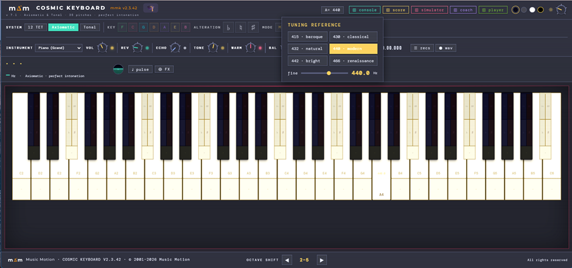
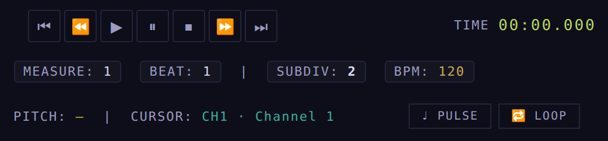
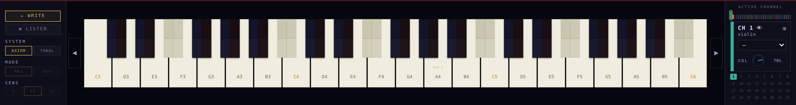
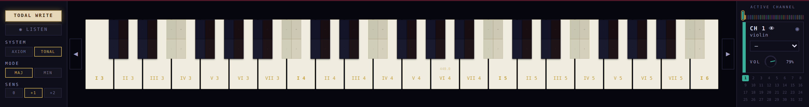
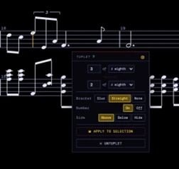
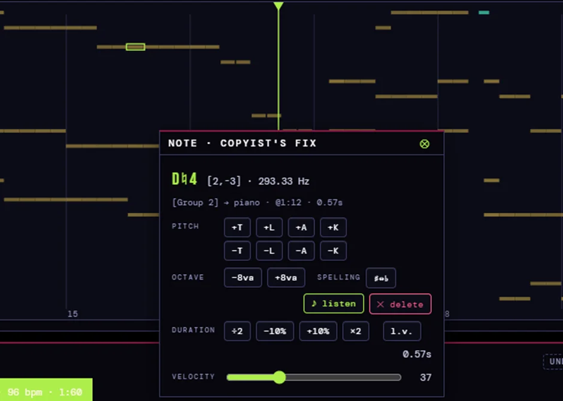

De gebruikshandleiding.
Wat elke bediening van elke app doet, geschreven voor een musicus. Ze groeit app per app mee met de suite: de Console, en nu de Coach.
De mengtafel.
De balans tussen de instrumenten van de partituur. Zelf maakt ze geen klank: ze weerspiegelt de kanalen van de Score en werkt in op de audio van het Cosmic Keyboard, de enige klankmotor.
Het kanaal (kanaalstrook)
Elk instrument is een kanaalstrook: stip en streep in de kleur van het kanaal (ze lichten op wanneer het actief is), een instrumentkeuze die gesynchroniseerd is met de Score, een live niveaumeter, een volumefader met dB, en M (mute) / S (solo). Ongebruikte kanalen worden gedimd.
PAN — positie
De knop plaatst het instrument vóór de luidsprekers. De led is rood naar links en groen naar rechts, zoals de lichten van een vliegtuig. C = midden.
EFFECTS/CH
Vier effecten per kanaal in een raster van 2×2: AGOG (agogiek), ASYM (asymmetrie), PRES (aanwezigheid van de aanzet) en ART (articulatie). Elk met een knop en een verlichte toets; klik = bypass.
De master
Vaste kolom rechts, altijd in beeld: de „Stereo Out”. L/R is de luidsprekerbalans van de hele suite (hetzelfde als BAL van het Keyboard); de gouden fader is het mastervolume van de suite —het geheel, wat ⬤ wav en SAVE AS WAV opnemen; de VOL van het Keyboard en de Vol van de Score zijn iets anders: elk regelt zijn eigen deel—; L- en R-meters en een master-MUTE.
Het transport
▶ ⏸ ⏹ bedienen de Score op afstand; TIME toont de positie, met Measure/Beat/SubDiv en de BPM/Pitch van het stuk. De zoekknoppen werken nog niet via sync.
Licht, thema's en navigatie
Zon/maan regelt de helderheid (dubbelklik = normaal). Vier thema's, gedeeld door de hele suite. De ⊞-knoppen openen de andere apps, blijven verlicht zolang die open zijn, en een klik brengt ze naar voren.
De testbank voor klankkleur en register. De stapsgewijze handleiding („hoe je hem gebruikt”) staat op zijn pagina.
De raadgever.
Hij vergezelt je terwijl je schrijft — alleen als je dat wilt. Hij spreekt op het juiste moment, precies waar je aan het werk bent, en bewaart de lange uitleg voor wanneer je erom vraagt.
Het oor 🎓
Naast de titel van elke app staat een 🎓. Eén klik wekt hem (hij pulseert zacht in violet: de coach luistert) of laat hem slapen — één toestand voor de hele suite. Met een rechtsklik kies je welke coach je vergezelt: vandaag de Suite Coach; Salieri komt later met zijn eigen karakter.
Het berichtje
Wanneer er iets gebeurt dat het vertellen waard is (bijvoorbeeld: je schreef een noot na het begin en de Score vulde de maat aan met rusten), verschijnt er een compact bericht precies waar je de noot neerzette. Het blijft staan tot je het sluit: ✕, een klik erbuiten, of zijn 🎓 — dat de volledige miniles in de Coach-app opent.
De app: drie tabbladen
🎓 Coach: het sessielogboek (wat hij je vertelde, met tijdstip) en de coachkaarten om uit te kiezen. 🎻 Orchestration: de instrumentenbibliotheek van de suite, met families, omvang en regimes. 📖 Classroom: de minilessen om rustig te lezen — ze groeit met elk nieuw advies.
Het eerste advies
„De maat klopt altijd”: als je noot op tel 3 inzet, worden de vorige tellen aangevuld met rusten — de coach toont je welke hij plaatste en waarom ook rusten meetellen. Lees het volledig in de Classroom of in de les op de site.
Het compositiespel
De Klas van de Coach heeft één kaart per niveau. Je opent ze, ze vraagt één keer je naam — elke latere oefening neemt die over — en geeft je je eigen bestand. Van daaruit schrijf je: het spel is een heel stuk componeren, één stem tegelijk.
Eén fase tegelijk
De melodie bovenaan is het model en is vergrendeld: ze is de referentie, niet om te bewerken. Wanneer je de stemmen van een fase voltooit, zegt de Coach het je en groeit het werk vanzelf naar het volgende deel. Je hoeft niets in een menu te zoeken.
Wat de Coach signaleert
Terwijl je melodieën schrijft, signaleert hij de moeilijke sprongen — de tritonus, de septiem, de grote sprong die niet wordt opgevangen — en of de frase terugkeert naar de tonica. Vanaf de duo's let hij ook op wat er tussen de stemmen gebeurt: parallelle kwinten en octaven, kruisingen. Het zijn waarschuwingen: ze houden je nooit tegen bij het schrijven.
Opslaan en terugkomen
Je vorderingen reizen mee in het bestand, dus je slaat op en gaat verder wanneer je wilt: bij het heropenen weet de Coach in welke fase je was en herhaalt hij niet wat je al gehoord hebt. Bij elke mijlpaal loont een Save as — het geeft je een terugkeerpunt voor elk deel van de tocht.
De ster
Wanneer de laatste fase afsluit, maakt de Coach de rekensom van de hele tocht en tekent hij je met een ★ naast je naam, in het bestand zelf. De sterren stapelen zich op over de oefeningen heen.
Een passage herhalen: de A–B-loop
Op de maatstrook rechtsklik je op de maat waar de loop moet beginnen → „▼A Loop Start”, en op een andere voor het einde → „▼B Loop End”. Elk uiteinde krijgt zijn driehoekje en een verticale lijn in zijn kleur, en beide kun je verslepen. Vanaf dan herhaalt de passage zich eindeloos; de knop LOOP in de werkbalk blijft goud verlicht en zet de loop uit wanneer je wilt. „Clear Loop A + B” verwijdert beide. Gebruik het om de begeleiding te laten rondgaan terwijl je erover repeteert op het Keyboard — dat in zijn paneel ♩ Pulse ook de maat slaat.
Inzoomen op een traject: kaart en liniaal
Met het hele werk in beeld is de strook bovenaan een kaart: 226 maten op een handbreedte, om je weg te vinden. Wanneer je aan een passage wilt werken, rechtsklik → „Zoom — 16 bars from here” of „Zoom — A–B loop”: de partituur zoomt in op het traject en de strook wordt een liniaal die gelijnd is met de gravure, zodat elk getal en elke markering op haar maatstreep valt, en de liniaal volgt je wanneer je scrolt. „Whole work” keert terug naar de kaart en geeft je de zoom terug die je had.
Een .mxl openen zonder hem uit te pakken
Een .mxl is gecomprimeerde MusicXML: dat is wat Finale, MuseScore en Sibelius exporteren. De Score opent hem nu rechtstreeks, met dezelfde knop waarmee je een .xml opende, zonder hem met de hand uit te pakken. Hij kijkt naar de inhoud van het bestand, niet naar de naam, dus een .musicxml of .xml die in werkelijkheid gecomprimeerd is, komt er net zo goed in. Een weetje voor de musicus, niet over de Score: Finale v27.4 opent een .mxl alleen via File → Import → MusicXML; zijn File → Open weigert hem met „Invalid file type”, zelfs .mxl-bestanden die Finale zelf heeft geëxporteerd.
De opmaat en de woorden (2026-09-25). De onvolledige maat aan het begin komt binnen als maat 0, zodat de nummering overeenkomt met de gedrukte uitgave; een boog die op de opmaat begint, komt ook binnen. En expressiewoorden zonder metronoomaanduiding —„legato”, „espressivo”— gaan niet meer verloren: ze komen binnen als expressies met hun traject.
Herhalingen, tuplets en pedaal in MusicXML (2026-09-28)
De herhalingstekens ||: :|| van het bestand, met hun aantal keren, komen binnen als een herhalingssectie van de Score —dezelfde die de pop-up Rep aanmaakt—: de partituur bewaart de geschreven maten en vouwt ze uit bij het afspelen (Ave Maria van Schubert: 32 geschreven, 82 gespeeld). De :|| wordt niet meer als slotstreep getekend. Tuplets worden opgebouwd per aanzet —een akkoord telt één keer— en de rust die een groep opent, hoort bij de tuplet.
Het pedaal reist in beide richtingen. Bij het exporteren gaat elk zichtbaar Ped en ✱ naar buiten als MusicXML-pedaal, op zijn exacte tel, zodat Finale of een ander programma het toont; bij het importeren komt het pedaal van een ander programma binnen als jouw Ped- / ✱-tekens. Pedal simile en pedaaldiepte hebben geen vorm in MusicXML: ze blijven in de suite (onze eigen XML draagt ze volledig mee). Eerste en tweede volta's komen nog niet binnen.
Haken en accolades reizen mee met de partituur
Bij het importeren komen de familiegroepen van het bestand getekend binnen —haak, subhaak en accolade—, met de maatstreep doorgetrokken of onderbroken zoals het bestand aangeeft; een groep die in een andere genest is, wordt een subhaak, in welke volgorde het exporterende programma hem ook schreef. En bij het exporteren worden ze weer uitgeschreven: de heen- en terugweg is getest. Wat nog niet binnenkomt: de titel, de ondertitel en het copyright van de pagina, expressiewoorden die niet bij een tempo horen (pizz., arco, grazioso, unis., colla parte…), de korte naam van het instrument en de groepsnaam.
Het instrument.
De enige klankmotor van de suite: alles wat je hoort, klinkt hier. Vijfendertig toonhoogtes per octaaf, zuivere pythagorese stemming, en een getempereerde strook op elke toets om het verschil te horen.
Drie manieren van spelen
Axiomatic: het zuivere pythagorese systeem — toetsen met hun namen. 12 TET: het QWERTY-toetsenbord neemt de klassieke pianoindeling over en klinkt getempereerd op de cyaan stroken. Tonal: kies toonaard, alteratie en modus, en het computertoetsenbord speelt per trap — je kunt correct componeren in elke toonaard zonder piano te kennen. Groepen die niet van toepassing zijn, worden gedimd; ze lichten op wanneer je naar Tonal gaat.
Chord Lab — akkoorden horen met de muis
Je speelt een noot met de linkermuisknop. Een rechtsklik op het klavier laat haar doorklinken met haar lampje aan (Hold); elke nieuwe noot die je speelt, stapelt zich erbovenop, zodat je het hele akkoord hoort. Nog een rechtsklik zet alles uit. Om complexe akkoorden te horen zonder meerdere toetsen ingedrukt te houden.
De HiFi-uitgang
Op de tweede regel de uitgangsketen: VOL (het volume van wat je op de toetsen speelt — de Score heeft zijn eigen volume en het totale niveau staat in de MASTER van de Console) · REV (galm) · TONE (donker ↔ helder — het lampje wordt blauw of geel, als een vlag) · WARM (warmte, verzadiging met consonante boventonen) · BAL (jouw positie vóór de luidsprekers). Elke knop met zijn gekleurde lampje, en dubbelklik zet hem terug op neutraal.
De kist met opnames
⏺ neemt op wat je speelt — exacte frequenties, geen MIDI, geen kwantisering. De knop „☰ recs” opent de lijst: hernoemen, ▶, .mmf exporteren, .mmf of .mid laden (MIDI komt binnen als getempereerde laag, in cyaan). De knop PLAYBACK TEMPO speelt elke opname af op halve tot dubbele snelheid: neem langzaam op, luister op tempo. Het transport heeft ⏪ ⏸ ⏩: pauzeer waar je bent en spring tien seconden terug of vooruit, met de klok tot op de milliseconde (00.00.000). Spring je in een andere dans, dan komt het klavier binnen gestemd op de toonaard van dat deel. Wat je net hebt opgenomen, verschijnt bovenaan in de kist, met „keep in list” en „save as .mmf” binnen handbereik. En je kunt opnemen terwijl de Score speelt: de opname komt er zuiver uit, alleen wat jij speelde.
♩ Pulse — de metronoom
De knop ♩ opent een kleine console: een kloppend lampje, ▶, tikken om het tempo in te stellen, een BPM-knop, het klassieke menu van Largo tot Presto, en een optionele klik met volume en klankkleur. Vastgezet met ⊗ blijft hij doorgaan; losgemaakt stopt hij wanneer je hem sluit — niets blijft per ongeluk klinken. En hij slaat mee met de muziek: wanneer je een mmf uit de kist afspeelt, of terwijl de Score speelt — ook binnen een A–B-loop — volgt het lampje de maat en toont de display het tempo van dat deel. Het werk leidt: zodra zijn puls binnenkomt, stopt de vrije metronoom vanzelf.
De noot en de horizon
Onder het instrument toont de display de noot en haar exacte Hz. Ernaast de kunstmatige horizon: lijn in het midden = axiomatisch; ze stijgt wanneer de noot naar boven trekt (leidtoon), en daalt wanneer ze naar beneden oplost. A= stelt de referentie in (415–466 plus fijnregeling) voor de hele suite.
A= · de referentietoonhoogte van de hele suite
De knop A= 440, rechtsboven. Hij opent Tuning Reference: zes referentietoonhoogtes op één klik —415 barok, 430 klassiek, 432 natuurlijk, 440 modern, 442 helder, 466 renaissance— en de schuifregelaar fine, van 380 tot 480 Hz in stappen van een halve hertz. Wanneer de A verschuift, verschuift de hele kwintenketen mee: de 35 toonhoogtes stijgen of dalen samen en de intervallen blijven zuiver pythagorees. Het transponeert de muziek niet: het stemt het geheel lager of hoger.
Terwijl de Score speelt. De A= van het Keyboard en die van de Score zijn één en dezelfde: wat je in de ene verandert, neemt de andere over. Zo kun je een partituur laten spelen vanuit de Score en op het Keyboard je referentie zoeken terwijl je luistert: die van je instrument, van je orkest, of die van een historisch repertoire. De noot die al klinkt, eindigt zoals ze begon; de volgende komt binnen op de nieuwe A. Als je daarna vanuit de Score opslaat, onthoudt het .mmf-bestand de referentietoonhoogte en gaat het stuk ermee weer open. De Pythagorean Tuner heeft dezelfde regelaar (Reference pitch A4), maar het is een aparte toepassing: als je je instrument daarmee op 442 stemt, zet hier ook 442 in. Meer in de FAQ.

Octaven en paniek
OCTAVE SHIFT onderaan (◀ ▶ of de pijltjestoetsen ← →) verschuift het octaafvenster — je hand verlaat de toetsen nooit. In Tonal stemmen ↑/↓ de aangehouden noot live een apotome om. Escape onderbreekt alle klank. De rijen van het computertoetsenbord tellen volgens positie, niet volgens letter: op een AZERTY- of QWERTZ-toetsenbord speelt de toets die op de plaats van de QWERTY-toets ligt.
Twee klavecimbels in de bank: wat er verandert als je ze bespeelt
De instrumentkeuze (Harp & Keyboards) heeft twee nieuwe klavecimbels: Harpsichord (Tonal) en Harpsichord (Well-tempered). Hetzelfde instrument —op het gehoor gestemd op Bachs Sinfonia's 9 en 11— met één verschil: het Tonal klinkt in de stemming van het huis (pythagorees volgens spelling), het Well-tempered stemt elke noot om naar Werckmeister III met A = 440 vast; vergelijk op het gehoor, kwinten en tertsen veranderen van kleur. Tegenover de piano: bijna geen dynamiek per toets (pp en ff verplaatsen het niveau nauwelijks; wat met de kracht meeademt, is de „tac” van het mechaniek), noten laten iets vóór de volgende los —barok détaché— behalve onder een boog, een overbinding of een expliciete lengte, en binnen een boog wordt de laatste noot vanzelf losgelaten, korter en lichter. Het klinkt zachter dan de piano bij gelijke VOL: dat is zijn echte niveau; VOL hoger zetten is het oor dichterbij brengen. Nog te doen: registers (8'+8', 4', luit) en sympathische resonantie.
Het klavecimbel, afgerond: schittering bovenaan en een bas die niet duwt
Er veranderden twee dingen, en daarmee is het instrument afgerond. Het eerste is de schittering in de hoogte: bij de aanslag propt de bas 77 boventonen in de band van 3 tot 8 kHz —vandaar de ruwheid, „een bestekla die op een tafel landt”— terwijl C5 er tien plaatst, ver uit elkaar: hetzelfde wordt daarboven als schittering gehoord. Beide klavecimbels voegen nu bij de aanslag een schitteringsimpuls met vaste frequentie toe (3,5 · 5,2 · 7 kHz), in de bas nauwelijks aangeduid en in de hoogte volledig. Het tweede is de balans: het instrument kwam vlak uit —hetzelfde niveau op C2, C3, C4 en C5, wat geen enkel echt instrument doet—. De bas zakt 3,9 dB op de laagste noot en 1,5 dB op C3; de hoogte blijft onaangeroerd. Hij verdwijnt niet: hij laat zich gelden door zijn duur, 22 seconden uitklinken tegenover 3,5 bovenaan. En het mechaniekgeluid is niet mee gezakt — de toetsklop en de „tac” zijn waar ze waren.
Harp, gitaar en pizzicato klinken nu getokkeld
Alle drie waren het vlakke presets: dezelfde kleur over het hele bereik. Nu zijn ze per register gemodelleerd, zoals de piano en het klavecimbel, met elk vier ankerpunten. De harp: de laagste snaar klinkt 17 seconden na en de hoogste een halve seconde, de klankkast klinkt op haar eigen frequenties, en aan het begin is er een stoot van de klankbodem en een kleine toonhoogteglijding; ze heeft geen demper, dus de noot mag doorklinken tot ze vanzelf uitsterft (l.v.) — étouffé is een techniek en die is er nog niet. De gitaar: omwonden en blanke snaren klinken verschillend, en je hoort de overgang wanneer je naar de 3e snaar gaat; het uitklinken gaat van 9,5 seconden onderaan tot 1,1 bovenaan, en ook zij laat de snaar doorklinken. Pizzicato, solo en sectie: de hoge kam ontneemt de snaar snel haar energie —bovenaan sterft de noot in 50 tot 100 milliseconden— en de speler dempt haar met de hand; de sectie klinkt zachter en iets minder samen, omdat niet iedereen op hetzelfde moment tokkelt. En de dynamiek volgt een andere wet: bij een getokkelde snaar opent de kleur nauwelijks met de kracht —de vinger en het aanslagpunt bepalen haar—; wat van pp naar ff groeit, is de klap en het contactgeruis. Speel hard en de helderheid licht niet op zoals met de strijkstok: de aanzet wordt groter.
De toonaard van het Keyboard volgt het stuk
Wat de Score naar het Keyboard stuurt, is de voortekening, niet de toonaard: f klein komt binnen als As en g klein als Bes (dezelfde voortekening, een andere grondtoon). De echte toonaard —grondtoon en modus— bestaat alleen als het werk een gegevensblad heeft met zijn tonale centrum aangegeven; met het gegevensblad toont de badge van het Keyboard „F minor” en verandert hij vanzelf naarmate elk stuk van het bestand voorbijkomt. Het gegevensblad kan nu de maat aangeven waarop elk deel begint: vroeger kwam dat alleen uit de deeltitels die op de partituur geschreven stonden, zodat een werk waarvan de titels anders geschreven waren zonder kaart bleef en het Keyboard terugviel op de voortekening. En als een aangegeven centrum op geen enkele maat valt, wordt de hele kaart verworpen en geldt de geschreven voortekening (de melding blijft in de console): een halve kaart is erger dan geen — ze drukte de toonaard van het eerste deel op het hele werk, 544 maten aangekondigd in C groot.
⬤ wav — opslaan wat je hoort
De opnamebalk heeft een knop ⬤ wav. Eén klik start de opname —de knop wordt rood en telt de seconden— en een tweede klik sluit de opname af en downloadt het bestand, stereo en 24-bit. Het is geen offline render: het neemt live op wat de master verlaat, op de echte audiothread, en daarom is het geschikt om artefacten te horen —een klik, een kras— die een ideale mix nooit zou hebben. De opname wordt afgetakt na klankkleur, warmte, galm, balans en de MASTER van de Console: staat de MASTER op 20 %, dan komt het bestand uit op 20 %. Met opzet: wat bewaard wordt, is wat klinkt — en daarom komt alles wat je in de Console verschuift terwijl hij opneemt (faders, pan, mute, master, reverb) in het bestand terecht. De audio moet al lopen — speel een noot voordat je erop drukt. Vanuit de Score vraag je dezelfde opname aan met File → SAVE AS WAV: hij speelt het stuk of de SELECT-regio en downloadt het bestand met de naam van het stuk.
Het vibrato zet in, ademt en volgt de groep
Bij strijkinstrumenten en bij alles wat aanhoudt, begint het vibrato niet meer volledig met de noot: het zet in na de aanzet —de stok grijpt eerst de snaar en beweegt pas daarna— en op een korte noot zet het helemaal niet in. Zijn snelheid volgt het gebaar binnen een klein bereik (±12% van de snelheid van de preset), want een speler varieert de breedte veel meer dan de snelheid. En zijn breedte volgt de hiërarchie van de gebalkte groep: meer op de eerste noten dan op de volgende, zoals de druk dat al deed.
De harp: de snaar, de vingertop en de klankkast
Vijf hoorbare verfijningen. De spanningsglijding van de aanzet —die tiende van een seconde waarin de getokkelde snaar zich op haar toonhoogte zet— hangt nu af van het materiaal: de omwonden bas geeft nauwelijks mee, darm geeft zijn deel, en het nylon van de hoogte geeft twee keer zoveel. Het schrapen van de vinger wanneer die de snaar stilzet, duurt en weegt naargelang het register. De overgang darm-nylon lag een octaaf te laag, zodat E4, G4 en A4 —die van darm zijn— nylonwaarden kregen: verholpen. Bij f en ff opent de klap zich in de hoogte meer in plaats van minder: het lage plafond van de hoogte hoort bij de toon, niet bij de transiënt, en een harpist die drukt, moet sterker klinken — dit is de harp van Mahler. En daarboven, waar de snaar in minder dan een halve seconde uitsterft, blijft de resonantie van de klankkast nagalmen: de klank bestaat uit twee dingen, de tokkel en wat er daarna nazoemt.
⊕ FX: reverb, echo, porta en rotary per kanaal, live
De knop ⊕ FX in de werkbalk opent een pop-up per kanaal met zes knoppen —Reverb · Echo wet · Echo fb · Echo time · Porta · Rotary—, met de naam van het instrument van het kanaal en in de taal van de Coach. Ze beïnvloeden alleen wat je live speelt. Vibrato staat hier niet: het is de zesde knop van de pop-up van de Score, want daar wordt het geschreven als een gebied van het stuk en live spelen heeft geen plek om het te bewaren. Rotary is de draaiende luidspreker van het jazzorgel (Leslie): op 0 staat hij uit; draai eraan en hij gaat aan, van Slow (0,8 Hz) tot Fast (6,7 Hz), en hij versnelt en vertraagt zoals de echte. Dubbelklik: Off.
De twee pop-ups verdelen het werk: deze is voor live spelen en die van de Score voor afspelen. Ze delen dezelfde echolijn en dezelfde galm, maar elke noot draagt haar eigen send, dus de echo hier hoger zetten maakt het afspelen van een partituur niet natter, en omgekeerd evenmin. De pop-up opent vastgezet (⊗) net onder de knop en sluit met een klik op het slotje; je sleept hem aan zijn kop, en zijn breedte kun je aanpassen.
De partituur.
Je schrijft muziek per kanaal met het mini-keyboard in de TODAL-modus: je speelt op de toontrappen. Zelf maakt het geen klank — die komt van het Keyboard.
Hoe opmaten nu geschreven worden
De opmaat is niet langer een apart vak: ze is maat 0. Je schrijft erin zoals in elke andere maat —meerdere waarden, overbindingen, kopiëren en plakken erbinnen— en elke noot klinkt op haar plaats (vroeger klonk de hele opmaat samen op seconde 0). Het .mmf-formaat is ongewijzigd.
Delete & close gap ⇤
De pop-up „Select · Actions” heeft een nieuwe rij: „Delete & close gap ⇤”. Die wist de selectie en schuift wat volgt terug om het gat te dichten —wat over een maatstreep heen blijft hangen, wordt automatisch gesplitst en overgebonden. Eén enkele Undo.
De muziek opnieuw in maten indelen
De pop-up TIME heeft een nieuwe knop naast Apply to All Channels: „Re-bar the music”. Apply verandert alleen het geschreven maatteken; Re-bar herverdeelt het hele stuk over de nieuwe maten (en stuurt, met UPBEAT aan, het juiste aantal kwartnoten naar de opmaat). Met een maatsoort per traject weigert hij en geeft hij een waarschuwing.
Het anker ▲/▼ op de editors
Het anker ▲/▼ dat een pop-up boven of onder de klik vastzet, wordt nu ook gerespecteerd door de noot- en markeringseditors (EXPR, DYN, Beam, Stem, Interp, tuplet, Hairpin, section/repeat) en door het paneel CHANNELS, dat de werkbalk niet meer met een lange lijst bedekt.
Een nieuw bestand openen: schoon laden
Een nieuw .mmf openen neemt niets meer over van het vorige —geen noten, geen markeringen, geen Undo-geschiedenis. (Bug opgelost: vroeger bracht een Undo vlak na het openen van een bestand de noten van het vorige bestand terug.) Je voorkeuren en het klembord blijven bewaard.
Paginamodus: bewerken op het blad
De knop PAGE in de werkbalk schakelt tussen de doorlopende strook en de weergave als blad: de partituur verschijnt als A4-pagina's in hetzelfde venster, met dezelfde gravure als de afdruk, maar erbovenop bewerkbaar. Een tweede keuzelijst kiest de weergave (Whole page · Fit width · Side by side). Op het blad kun je al een noot selecteren en daar de cursor plaatsen, een markering selecteren (dynamiek, expressie, articulatie, tempo, agogiek) om haar met de zoomknoppen van grootte te veranderen, of op een lege plek klikken om de cursor te plaatsen (die vastklikt op het raster). Een rechtsklik opent dezelfde contextmenu's als op de strook (noot, overbinding, boog, tekst, markering, kanaal), en bij het aanwijzen verandert de aanwijzer in een hand boven alles wat aanklikbaar is. Tijdens het afspelen lichten de rode lijn en de klinkende noten op het blad op. Het blad heeft een eigen zoom en scroll (scrollwiel; Shift+scrollwiel zijwaarts; Ctrl+scrollwiel zoom). Het is omkeerbaar en laat de strook onaangeroerd. Nog niet: noten verslepen of nieuwe noten met de muis op het blad schrijven — gebruik daarvoor de strook of de zwevende strook.
Paginamodus: bladinstellingen in de werkbalk
In paginamodus (de knop 📄 PAGE / ▦ SCROLL wisselt tussen blad en strook) staan naast de weergavekeuze (Full page · Fit width · Side by side) twee nieuwe uitklapmenu's om het blad live bij te stellen, zonder 🖨 PRINT VIEW te openen. „Bars/system” bepaalt hoeveel maten per systeem (Auto, of 1 tot 6) en „Staff space” de grootte van de notenbalk (3 tot 9 mm); het blad wordt meteen opnieuw opgemaakt terwijl je ze verandert. Ze blijven gesynchroniseerd met het venster 🖨 PRINT, in beide richtingen. Standaard: Auto · Staff 5 mm.
Toonaardwisselingen per traject
De voortekening kan midden in het stuk veranderen: in de pop-up KEY komt „This Bar” tot leven met de rij From M / To M — kies de toonaard en het traject waarover hij geldt; buiten het traject keert de vorige voortekening terug, en wie de toonaard kiest die al geldt, verwijdert de wisseling. De gravure volgt de klassieke conventie: herstellingstekens ter herinnering aan het eind van de vertrekkende maat, een automatische dubbele maatstreep, de nieuwe voortekening na de maatstreep en de noten daarna. De ruimte wordt automatisch gereserveerd.
Stemmen die één notenbalk delen (Layers)
Een kanaal kan op de notenbalk van een ander kanaal worden weergegeven: in het menu ☰ van CHANNELS kiest het uitklapmenu Staff de gastheer. De gast krijgt geen eigen rij (piano = twee notenbalken, elke stem afzonderlijk te dempen) en zijn stokken staan in de tegenovergestelde richting. Om de gast te bewerken: rechtsklik op de kanaalnaam in de marge — dat wisselt het actieve kanaal van de rij, en het label toont wie je bewerkt.
Het octaafteken (8va / 8vb / 15ma)
De 8va is inkt, geen muziek: de noten blijven bewaard op hun echte toonhoogte (afspelen, Coach en Keyboard merken er niets van); het teken verschuift alleen waar ze geschreven worden. Drie ingangen: selectie + O (wisselt 8va → 15ma → uit; Shift+O = 8vb/15mb), de rij OCTAVE van de pop-up CLEF (From M / To M; „—” wist het bereik in alle kanalen), en de lijn zelf: bij het aanwijzen licht ze goud op met een handcursor — sleep met de rechtermuisknop om haar verticaal te plaatsen (blijft bewaard), Supr wist haar, en O laat haar wisselen zonder te selecteren.
Bis, eis of een dubbele alteratie schrijven
De Acc-knoppen in de noteneditor veranderen de alteratie maar niet de letter: vanuit een c kun je cis of ces bereiken, nooit bis. En er is geen knop die de ene schrijfwijze door de andere vervangt, met opzet: deze suite kent geen enharmonie — in pythagorese stemming ligt bis een komma boven c, het zijn twee verschillende klanken. Wil je een bis, schrijf dan de noot B en geef haar een ♯ met Acc; hetzelfde voor eis, fisis of deses. Wanneer de partituur uit een MIDI-bestand komt, dat geen schrijfwijzen bevat, leidt de Player ze bij het omzetten af uit de voortekening (bis, eis en dubbele alteraties waar ze horen), en in de Player zelf verandert de knop ♯↔♭ van de noteneditor de schrijfwijze van één noot of van een hele passage voordat die naar de Score gaat.
Een alteratie verschuiven (Acc↔)
De ruimte rond alteraties in dichte passages wordt automatisch berekend (het raster reserveert de echte breedte van elk teken). Voor overblijvende botsingen — een herstellingsteken boven op een kruis in hetzelfde akkoord — heeft de noteneditor de rij Acc↔: ◀/▶ verschuiven alleen de alteratie van de geselecteerde noot (2px per tik, ingedrukt houden om te herhalen), ⟲ zet terug. Het werkt per noot, en de verschuiving reist mee in het bestand.
Het declaratieve blad: Gap in mm en Pages
Elke dimensie van het blad heeft één eigenaar: Staff mm is de grootte van de muziek (heilig — wordt nooit automatisch verkleind), Sys gap de ruimte tussen de systemen in millimeter op papier (los van de notenbalk), Bars/system de dichtheid, en Pages het doel: geef aan hoeveel pagina's het stuk moet beslaan en de paginering bespaart zelf ruimte (tussenruimte → ademruimte vanaf pagina 2 → titelblok, met ondergrenzen). Is het doel onmogelijk, dan meldt de voettekst van het venster het haalbare minimum — en past het toe. Het blad respecteert ook je opmaak (de notenbalkafstand die je hebt bewerkt, reist mee naar de pagina) en je kunt de paginaweergave van overal openen — de scrollpositie wordt hersteld wanneer je ze verlaat.
Het computertoetsenbord
In WRITE/TODAL schrijf je met het toetsenbord: de letters spelen op de toontrappen, het numerieke toetsenblok kiest de duur (1 = 64ste … 7 = hele noot, de punttoets = punt), ↑/↓ verplaatsen de geselecteerde noot een octaaf omhoog of omlaag, ←/→ verschuiven het klavier, +/− op het numerieke toetsenblok stellen de APO bij (fijnstemming, ±2) en de rij 1–0 bouwt akkoorden. CapsLock zet TODAL aan en uit. Het volledige overzicht staat in het sneltoetsenblad.
De Coach en het automatisch aanvullen van de maat
Een waarde of een punt die niet past: als je een punt probeert toe te voegen — of een waarde schrijft — die niet past in wat er van de maat overblijft, waarschuwt de Coach je (tweetalig, met de 🎓 aan) en laat hij de maat niet overlopen. Om over de maatstreep te gaan, schrijf je een andere noot en bind je die over. (De punt bij een noot zet je met rechtsklik → Dot.) Automatisch aanvullen van de maat: als je een noot schrijft en dan naar de volgende maat springt terwijl je de vorige half af laat, vult de rest van die vorige maat zich vanzelf met de rust(en).
De zwevende strook: schrijven en bewerken
Een zwevende strook bevat de nootwaarden (duurwaarden, punt, voorslagen, tuplets) die je naar de notenbalk sleept; bij het loslaten blijven ze geselecteerd. Ze is ook een bewerkingstafel: op de geselecteerde noot breng je articulaties (staccato, accent, tenuto, marcato, fermate…) en dynamiek aan, plus bogen, stok en waardestreep — zonder andere panelen te openen.
De zwevende strook: noten verplaatsen en verkorten
Een noot verplaatsen door haar met de strook vast te pakken, klinkt niet meer (vroeger liet ze zich horen); en als je de muis uit het gebied haalt, valt de noot vanzelf neer: niets blijft aan de aanwijzer hangen. De kleinere waarde overnemen: sleep een waarde met kortere duur (bijvoorbeeld een achtste) op een bestaande noot (bijvoorbeeld een kwartnoot) en die noot neemt de kleinere waarde aan; het vrijgekomen gat vult zich vanzelf met rust(en), zonder de rest van de maat te verschuiven. Het werkt ook met rusten. Leesbaarheid: de knoppen van de strook zien er scherper uit, en in de donkere thema's (dark / grey) springt de pop-up van de strook eruit met een lichtkrans.
Bogen klinken, en ze hebben een richting
De boog klinkt nu en heeft een richting: voorwaarts getekend is hij een decrescendo; achterwaarts, over de vorige maat, een crescendo. Het kleurverloop van teal naar goud laat het je zien — de volle kleur (teal) markeert het anker, waar klankvolume en helderheid vol zijn, en gaat over in goud naar het zachtere uiteinde. Een lange boog bloeit open vanuit bijna niets.
Gebonden paren (nun ∩∪∩ · unu ∪∩∪): in de boogeditor kun je hem een puls per twee geven. Hij ziet er nog steeds uit als een gewone boog, maar hij klinkt als gebonden paren: de 1e noot van het paar meer gemarkeerd en de 2e lichter (nun begint sterk; unu begint zacht). Het verschil hoor je vooral in de aanzet — de sterke noot behoudt een vleugje articulatie en de zwakke komt gebonden en soepel binnen; de zwakke is ook ongeveer ~20% zachter. Het werkt met elk instrument.
Zie de curve voordat je ze hoort · Peak/Valley · Mirror · de adem
Zowel de boogeditor als de editor van het nootteken tonen nu een live tekening van de curve van het gebaar, tussen twee lijnen: Peak (het volste) bovenaan en Valley (het zwakste) onderaan. Het verloop gaat van teal (vol) naar goud (zwak), zoals op de notenbalk. Als de boog nog geen eigen Peak/Valley heeft, wordt de curve gestippeld getekend met een label „auto”: ze toont je de diepte die het programma zelf kiest. De vorm is een vloeiende curve (een messa is een afgeronde bult, geen driehoek). Peak en Valley zijn relatief tot de dynamiek, geen vaste niveaus: een > vanuit mf en een > vanuit ff zijn niet hetzelfde — de dynamiek bepaalt, en het gebaar springt nooit naar een absoluut niveau. De adem: de grootte van de zwelling wordt gemeten aan de echte seconden van de frase en aan hoeveel lucht de dynamiek meedraagt, zodat een korte, snelle boog niet „pompt” en een mf over een lange frase vol blijft. De Mirror van de boogeditor draait nu ook de vorm om (openbloeien ↔ wegsterven, messa ↔ omgekeerd), bovenop de kant van de boog en de hoogte.
Het nootteken (de laag van de vertolker)
Expressie per noot, bovenop de dynamiek. In de noteneditor kies je op de rij „Intp” het teken: < bloeit open, > sterft weg, <> messa di voce, >º< omgekeerd (forte → piano → crescendo, ideaal voor koper) en º niente. Sleep het om het hoger of lager te zetten. Rechtsklik op het teken om de Interp Editor te openen: Size, en Value — de dynamiek van het gebaar (Peak luid / Valley zacht; standaard f en p). De noot rust op haar eigen dynamiek.
Een tuplet bewerken
Rechtsklik op de haak van de tuplet om zijn editor te openen. Number On/Off toont of verbergt het getalletje. Angle (◣ ↻ ◢) kantelt de haak; het getal blijft rechtop. Size schaalt de noten niet meer: het verkort of verlengt de haak (zijn lengte). Move plaatst hem — de greep ↕ zet hem hoger en lager, de greep ↔ schuift hem opzij; je kunt de haak ook rechtstreeks op de notenbalk slepen. Wanneer de noten gebalkt zijn, rust de haak op de waardestreep; boven kwartnoten, halve noten of rusten, op de nootkop.
Alles selecteren
In de pop-up „Select · Actions” (rechtsklik op de knop SELECT) staan bovenaan twee nieuwe rijen: „Select all in channel” selecteert het hele actieve kanaal van begin tot eind, en „Select all channels” selecteert het hele stuk (alle zichtbare kanalen). Eenmaal geselecteerd pas je Copy, Cut, Transpose of Clear in één keer op alles toe.
Muziek naar een toonaard transponeren
In de pop-up KEY staat, onder de rij met het bereik, een nieuwe knop „⇅ Transpose music to key”. Open KEY, kies de doeltoonaard (pijltjes + Major/Minor) en klik erop: de hele muziek verhuist naar die grondtoon. Een echte transpositie — de intervallen blijven behouden, het is niet alleen een andere spelling van de voortekening. Ze respecteert het bereik van de pop-up: All CH (elk kanaal) of This CH (het kanaal van de cursor).
Score Info: auteur & copyright
De fiche van het stuk (knop Score Info) krijgt twee velden erbij: Author en Copyright — dat begint met „© {year}” — naast Title, Subtitle en Composer. Alles reist mee in het .mmf-bestand: wanneer je een stuk importeert, vult de fiche zich met wat het bestand meebracht, zodat de titel van de afdruk niet meer leeg blijft.
Opslaan
De knop SAVE (of Ctrl/Cmd+S) schrijft met één klik terug naar hetzelfde .mmf-bestand; MENU FILES → EXPORT MMF exporteert een nieuwe kopie.
Afdrukkop (alleen pagina)
Het venster 🖨 PRINT heeft een rij „Print header · page only” om Title / Subtitle / Composer / © alleen voor het afgedrukte blad in te stellen. Die gaat boven Score Info; laat je ze leeg, dan gebruikt de afdruk Score Info. Ze opent vooraf ingevuld, zodat je alleen bewerkt wat verandert, en ze wordt met het .mmf bewaard. Ernaast vergroot „T size” de afgedrukte titel en „C size” de componist.
Grootte van markeringen (Size −/+)
Rechtsklik op een dynamiekteken, een tempo of een tekst en er verschijnt een rij „Size” met − en + om de lettergrootte van die markering te veranderen; met de markering geselecteerd werken ook de zoomknoppen +/−. Elke stap is klein; houd ingedrukt om te herhalen.
Tempo: figuur en plaatsing
Het metronoomcijfer (♩=58) wordt kleiner gedrukt dan het tempowoord (Lent), zoals in de klassieke gravure. Het tempo kan horizontaal en verticaal versleept worden om het boven de maat te plaatsen waar je wilt.
Tekst toevoegen in de paginaweergave
Teksten — instrumentnamen of aanwijzingen zoals „dolce” — kunnen nu ook in de paginaweergave worden toegevoegd, niet alleen op de strook. Klik waar je de tekst wilt (daar komt de cursor), druk op de knop TEXT, typ en druk op Apply; daarna kun je hem verslepen om hem te plaatsen.
De geselecteerde noot wordt niet afgedrukt
Het cyaan kader rond de geselecteerde noot verschijnt niet meer op het afgedrukte blad of in de PDF: de selectie is alleen een bewerkingshulp op het scherm. Het blad komt er schoon uit.
Instellingen van het afgedrukte blad
De voettekst van de afdruk is nu één regel (auteur · ©). In het venster PRINT kiest „Bars/system” hoeveel maten per systeem (Auto, of 1 tot 6 — standaard 4) en stelt „Staff space” de grootte van de notenbalk in, van 3 tot 9 mm, in de modus Auto.
De partij van één instrument afdrukken (vanuit het Panel)
In het Panel (gesplitste weergave) kies je de kanalen met de chips, en de knop 🖨 PRINT VIEW — voorheen „📄 PAGE” — opent de afdrukweergave (hetzelfde venster als FILE → Print/PDF) met alleen die kanalen: zo druk je de partij van één instrument af. In het venster kiest de schakelaar „Show” tussen Full score (alle zichtbare kanalen) en Selected CH (alleen de kanalen die je in het Panel koos). Het veld „Part name” — met zijn groottevakje en een vinkje „Part” — drukt een label af linksboven op pagina 1; standaard is dat „Score” voor de volledige partituur of de instrumentnaam voor een partij, en het is bewerkbaar. Ctrl+scrollwiel boven de afdrukweergave zoomt alleen de bladen in, niet de werkbalk; het springt terug naar 100% bij het openen of bij een wijziging van View.
Het Panel: selecteren per gebied en verschuiven
Op het Panel tekent Alt + slepen een selectiekader en selecteert het noten per gebied → gouden kaders; die selectie klinkt met Play of Shift+Space, net als op het hoofdcanvas. En slepen met de linkermuisknop (hand: grab-/grabbing-cursor) verschuift het Panel in beide richtingen — een alternatief voor Shift+scrollwiel.
Articulaties die je kunt lezen
Punten, streepjes en accenten gaan naar een korpsgrootte van 56 (was 30): het muziekfont ontwerpt zijn tekens voor vier tussenruimten van de notenbalk en wij zaten op 62 % daarvan — op het blad was het staccatopunt geslonken tot anderhalve pixel. Al bewaarde tekens houden hun grootte; 56 geldt voor nieuwe. En zes tekens die niets tekenden omdat ze in het ingebedde font ontbraken —de stress, de Ped en de ✻, de twee streektekens en het tr-golfje— verschijnen nu.
De stemmen van één hand splitsen
Voor twee stemmen in één hand: maak het volgende kanaal zichtbaar met zijn sleutel, laat het op zijn eigen rij en verplaats noten met Ctrl + slepen —de noot, of de hele meervoudige selectie, belandt in het kanaal van de notenbalk waarop je haar loslaat, met haar waarde, waardestrepen, voorslagen en articulaties—. Rechtsklik daarna op de kanaalnaam: Put CHn on CHm voegt ze samen op één notenbalk en de stokken ordenen zich vanzelf (bovenste ↑, onderste ↓). Hetzelfde menu heeft Unfold the layers om een tijdje te bewerken: het is alleen weergave, het bestand behoudt de samenvoeging.
De toonaard over een selectie
De pop-up KEY krijgt het bereik Selection: met een gesloten selectie neemt de toonaardwisseling haar maatbereik over en bij het verlaten ervan keert de vorige toonaard vanzelf terug, met een dubbele maatstreep aan beide grenzen. Als de selectie in maat 1 begint, wordt de toonaard van het werk gewijzigd — en zo verdwijnt het herstellingsteken ter herinnering aan het begin, dat je niet kon wissen omdat het geen object is maar inkt van de wisseling.
Markeringen landen waar ze horen
De zeven tekens die tegen de nootkop aan liggen —staccato, staccatissimo, tenuto, portato, accent, marcato en stress— landen nu in het midden van de aangrenzende tussenruimte, boven en onder gelijk: met de stok omhoog zit de punt niet meer op de kop. Een teken schuift niet meer opzij wanneer je het vergroot —zijn plaats ligt vast ten opzichte van de kop— en meerdere tekens op één noot stapelen zich op een tussenruimte van elkaar. Elk type krijgt zijn eigen grootte: triller, dubbelslag en mordent 36 · Ped. en ✻ 30 · tenuto 48 · caesuur 42 · arpeggio 18 · pizz. en arco 24 · de rest 56 (al bewaarde tekens houden de hunne).
Tenuto, tremolo en streektekens
Drie tekens zitten niet meer in de weg. De tenuto staat gecentreerd op de stok, alleen verschoven naar de kant tegenover die waar hij vertrekt. De tremolo wordt op de stok getekend, op halve hoogte, in plaats van op de kop te landen. En de streektekens (⊓ afstreek, V opstreek) staan altijd boven de notenbalk, een halve tussenruimte boven de bovenste lijn; als de noot hoger klimt, stijgen ze mee om er vrij van te blijven —van de kop of de punt van de stok—.
Het arpeggio is nu een teken
Waar vroeger het cursieve woord arp. stond, staat nu het echte teken: de verticale keten van golfjes links van het akkoord, van de laagste noot tot de hoogste, die met het akkoord meegroeit. Voor een arpeggio op piano of harp dat over beide handen loopt: rechtsklik op het teken → Extend to CHn (staff above), en Cut at this staff om het terug te nemen. De optie verschijnt alleen als er op dezelfde tel een noot boven staat.
Bogen en overbindingen raken niet meer los
Er waren twee manieren om een boog te breken zonder het te merken: een noot wissen vanuit de noteneditor en noten naar een ander kanaal verplaatsen met Ctrl + slepen. Beide zijn verholpen, en het wissen in de noteneditor gaat nu ook in de undo. Bij het openen van een bestand laat een overbinding waarvan het doel niet meer bestaat —of een rust is, of van toonhoogte veranderde— zichzelf los, met een waarschuwing in de console: geen bogen meer die aan niets hangen.
De boog ontwijkt alles wat eronder ligt
De expressieboog gaat omhoog tot hij vrij is van alles wat eronder doorloopt —koppen, alteraties en uiteinden van stokken, dat wil zeggen de waardestreep— met vijf pixels lucht en zonder ooit meer dan vier tussenruimten te stijgen. De lijn is niet langer egaal: het is een gevulde curve, dun aan de uiteinden en dik in het midden. En de klik landt waar je hem ziet: tekening en gevoelige zone komen uit dezelfde berekening.
Dubbelklik = het hele akkoord
Nieuwe sneltoets: dubbelklik op een nootkop om het hele akkoord te selecteren —elke noot van dat kanaal op die tel— in dezelfde meervoudige selectie die Alt + klik opbouwt. Alles wat je al doet, is van toepassing: het akkoord in één keer articuleren, het horen met Shift + Space, het transponeren, het wissen. Vroeger moest je met Alt + klik noot voor noot werken.
Twee stemmen op één notenbalk: secunden en stokken
Wanneer twee stemmen op dezelfde notenbalk een secunde van elkaar liggen —of op een unisono— kunnen de koppen niet dezelfde plaats delen: een van beide schuift opzij. Welke opschuift, en naar welke kant, wordt niet door de toonhoogte bepaald: dat bepalen de stokken. De rode draad om te onthouden: de lijn van de stok valt altijd tussen de twee koppen; wat verandert, is hoeveel lijnen er zijn.
De kant. Als de twee stemmen hun stokken naar tegengestelde kanten hebben, lijnen de stokken zich uit en gaat de kop van de stem met de stok omlaag naar rechts. Als beide de stok naar dezelfde kant hebben, zijn er geen twee stokken om uit te lijnen: de stemmen lezen als één akkoord en de akkoordregel geldt —met de stok omlaag gaat de lagere noot naar links; met de stok omhoog de hogere naar rechts—. Een akkoord wordt nooit gesplitst: als de stem die zou moeten opschuiven een akkoord is en de andere een enkele noot, schuift de enkele noot op, en de kant wordt nog steeds door de stokken bepaald.
Wat er beweegt. Met één stoklijn schuift alleen de kop op en blijft de stok waar hij was: je ziet één stok tussen de twee koppen. Met twee lijnen reist de hele noot mee, stok en waardestreep inbegrepen. Het unisono volgt dezelfde regel: de twee koppen komen naast elkaar te staan in plaats van op elkaar gestapeld. En de maat reserveert de breedte van wat er bewoog, zodat de volgende noot niet in de knel komt. Wanneer je de lagen uitvouwt om te bewerken, herschikken de stokken zich niet meer: de gastheer blijft ↑ en de gast ↓, zoals ze eruit zullen zien wanneer ze weer samengevoegd zijn.
Het duwtje neemt de stok mee · Undo reikt verder
Wanneer je de inkt van een noot verschoof met Shift + slepen, bleef de stok staan waar hij was; nu volgt hij de kop, waardestreep inbegrepen. En undo bereikt zeven dingen die er vroeger aan ontsnapten: de voortekening (die van het werk en die van elk traject), de alteratie, de octaaftekens, de sleutels per traject, de kanaalnaam, de fiche van het werk en de samenvoeging van lagen. Een octaafteken plaatsen en de toonaard veranderen maken nu ook een momentopname —de toonaard alleen wanneer de wijziging van jou komt, niet wanneer ze gesynchroniseerd uit een andere app binnenkomt—.
De opmaat klinkt als een opmaat
De noot van de opmaat kwam vroeger binnen met het gewicht van een eerste tel: ze landde op de juiste plaats, maar met het verkeerde karakter. Nu zet ze in zoals ze gespeeld wordt —iets korter, met een zachtere aanzet en zonder stoot— en de metronoom van de suite markeert haar niet meer als sterk: het accent valt op tel 1 van maat 1, waar het hoort. Ze loopt ook op haar eigen tempo, overgenomen uit de maat waar ze naartoe duwt in plaats van uit het getal dat in de kop van het bestand staat, zodat een import met een afwijkende kop haar niet meer doet haasten. De luidheid blijft onaangeroerd: een opmaat heeft minder aanzet, niet minder aanwezigheid.
SUBDIV komt uit de muziek · de melding bij het openen
SUBDIV is de stap van de cursor —waar een klik landt, hoe ver een selectie verschuift, hoe ver een vork zich uitrekt—: het verplaatst geen enkele geschreven noot. Vroeger kwam het uit de maatsoort, die niets van de muziek weet: in 2/4 gaf het een achtste, zelfs wanneer het stuk in tweeëndertigsten stond, en de cursor kon niet stoppen waar de noten stonden. Nu wordt het afgeleid uit de noten van het bestand, en je kunt het nog altijd met de hand veranderen. En bij het laden meldt de Score wat hij buiten het raster vond —noten die noch op de tweeëndertigste noch op de triolenverdeling vallen, en markeringen zonder noot eronder—. De melding rapporteert; ze corrigeert niet, en dat zegt ze ook: er is niets verplaatst.
Noten omzetten in een triool of kwintool · de rij Ratio
De pop-up TUPLET is niet langer alleen om klaar te zetten vóór het schrijven: APPLY TO SELECTION zet al geschreven noten om in een groep. De verhouding volgt het aantal —5 noten geven 5:4, 7 geven 7:4, 3 geven 3:2, 9 geven 9:8—. Zonder selectie groepeert hij de tel onder de cursor, en als die tel al een groep bevatte, komt die in zijn geheel mee en wordt hij opgenomen: vijf noten geschreven als twee losse plus een triool worden één kwintool. Rechtsklik op de haak om de editor van de groep te openen, die nu een rij Ratio heeft (actual : normal) om de verhouding van een bestaande groep te veranderen —de manier om een tuplet te herstellen die de import verkeerd had—. Markeringen reizen mee met hun noten en undo herstelt wat er stond. Binnen een groep worden noten van gelijke waarde op gelijke afstanden getekend, zelfs wanneer er een noot van de andere stem in het midden valt, en de maat verandert niet van breedte.
De articulatie over een hele selectie · het label 1 note / selection
Met meerdere noten geselecteerd —Alt + slepen, dubbelklik op een akkoord, of de SELECT-regio— stelt de articulatiekaart een toestand in, geen schakelaar per noot: aan plaatst ze het teken op ALLE noten (zonder het te verdubbelen bij de noten die het al hadden); uit verwijdert ze het van ALLE noten. Vroeger, met drie noten met staccato en twee zonder, liet één klik er drie zonder en twee met: de selectie werd omgekeerd in plaats van veranderd. Zonder selectie, op de noot onder de cursor, blijft de kaart een schakelaar. En de balk bovenaan de pop-up telt nu wat het teken echt zal krijgen, in de kleur van het kanaal; het label is ook een schakelaar: één klik dwingt „1 note” af, nog een klik gaat terug naar „selection”.
Meerdere noten tegelijk overbinden · de boog van de overbinding
Tie ← prev en Tie → next werken nu op de selectie: met noten gemarkeerd via Alt + slepen bindt de knop ALLE noten over die overgebonden kunnen worden —de vier noten van een akkoord worden in één gebaar overgebonden aan het volgende akkoord—. Over een selectie is de kaart een toestand, geen schakelaar per noot: aan bindt ze alles over wat overgebonden kan worden; uit maakt ze alles los; zonder selectie, op de noot onder de cursor, blijft ze een schakelaar. Een noot wordt alleen overgebonden aan een andere van precies dezelfde toonhoogte, de dichtstbijzijnde in haar kanaal, en de noten die niemand vinden om aan overgebonden te worden, zeggen dat nu: de melding telt hoeveel er zonder bestemming bleven. Vroeger faalde het stilzwijgend. En de overbinding gaat in de undo: één Ctrl + Z per gebaar.
De boog heeft ook akkoorden leren kennen: binnen een akkoord openen de overbindingen zich naar buiten —de hoogste naar boven, de laagste naar onder, de middelste naar de dichtstbijzijnde kant—. Vroeger kwam de richting alleen uit de toonhoogte ten opzichte van het midden van de notenbalk, en twee noten van hetzelfde akkoord boven het midden gingen allebei naar dezelfde kant. Zonder akkoord, als de notenbalk twee stemmen draagt, volgt de boog de stem, net zoals de stokken. De ↕ Flip van de Tie-editor gaat boven dat alles: wat je met de hand kiest, wint, en het wordt in het bestand bewaard.
De pop-ups schikken: Free · Cascade · Grouped · Stack
De pop-up TOOLS krijgt een nieuwe rij, View popups, met vier elkaar uitsluitende toestanden: ◇ Free laat elke pop-up waar je hem liet; ⧉ Cascade zet ze trapsgewijs, 28 px per keer, en opent een nieuwe kolom wanneer de trap de vloer bereikt; ▦ Grouped zet ze naast elkaar, in rijen; ▣ Stack stuurt ze allemaal naar dezelfde plek —je ziet de voorste en de rest blijft erachter—. Het is een modus, geen knop: zolang hij aanstaat, wordt elke pop-up die je vanuit de werkbalk opent meteen in de schikking geboren, zonder dat je opnieuw moet schikken. Reset positions gaat terug naar Free en geeft elke pop-up de grootte terug die hij had vóór het inschakelen.
Het kaartspel: alle kaarten op één plek (Stack)
In Stack worden de pop-ups een kaartspel en blijft TOOLS opzij staan als index: het pijltje ↑ op elke rij van zijn lijst brengt de pop-up die je nodig hebt naar voren. De kaarten zijn aan elkaar gelijmd —je sleept er één en ze bewegen allemaal; TOOLS reist niet mee, hij beweegt op zichzelf—. Het kaartspel onthoudt waar je het liet: verlaat de modus en kom terug, en het verschijnt op dezelfde plek. De pin vertelt je wie erin zit: goud is een gewone pin, roze is een pin die ook aan het kaartspel vastzit. Groottes: elke pop-up neemt zijn minimale breedte, en de hoogste —Articulation en Channels— komen uit op 450 px hoog en scrollen vanbinnen; de rest behoudt zijn natuurlijke hoogte.
Boven of onder: ⬇ Top en ⬆ Bottom
⬇ Top en ⬆ Bottom bepalen of de pop-ups bovenaan of onderaan rusten, en de keuze verplaatst nu ook de pop-ups die al open zijn, in plaats van alleen voor de volgende te gelden. Ze wordt ook tussen sessies onthouden: sluit de Score met ⬆ Bottom en de volgende keer start hij zo. Met ⬆ Bottom rusten de pop-ups op het mini-keyboard wanneer dat open is en, als het dat niet is, op de transportbalk (vroeger, met het mini-keyboard gesloten, gedroeg ⬆ Bottom zich als ⬇ Top). Eén eerlijke kanttekening: een pop-up die hoger is dan de beschikbare ruimte kan niet onderaan rusten —hij past niet— en blijft bovenaan.
Nog drie pop-ups waarvan je de grootte kunt aanpassen
Duration, Time Signature en Key Signature voegen zich bij de pop-ups die je bij de rechterbenedenhoek vastpakt om ze groter of kleiner te maken, en die scrollen wanneer de inhoud niet past. Het waren de laatste drie in de werkbalk met een vast kader.
Cresc. of dim. met woorden schrijven
Je kunt een crescendo schrijven met het woord in plaats van de vork: cresc., dim., crescendo, diminuendo, en ook de term in welke taal je ook gebruikt (calando, morendo, en diminuant, abnehmend…). Het woord gedraagt zich precies zoals de vork: het heeft een begin en een einde, beide uiteinden kun je verslepen, en het klinkt hetzelfde. Op de pagina zie je het woord cursief en een stippellijn tot waar het traject eindigt, zoals het ook gedrukt wordt. De Score bepaalt zelf of het woord stijgt of daalt door naar de stam te kijken; als je de waarden From / To met de hand instelt, winnen de jouwe.
Het menu van een dynamiekteken is nu één enkel menu
Een rechtsklik op een dynamiekteken opende vroeger twee venstertjes. Nu opent hij er één, met alles erin: de grootte van de letter —getypt, niet alleen met pijltjes— en het traject, met een getypte eindmaat en knoppen − / + om het uit te rekken of in te korten. Bovenaan zegt het menu waarop de wijziging van toepassing is: het teken, het kanaal en het traject (cresc. molto · CH2 · M29 → M33). Geen gegis over het bereik.
Overbindingen gaan niet meer verloren bij het opslaan
Er was een geval waarin een overbinding verdween bij het heropenen van het bestand. Het waren twee dingen: bij het opslaan verschoven de overbindingen van het kanaal een beetje, en bij het openen werd de verschoven overbinding losgelaten in plaats van hersteld. Nu herstelt de Score: een overbinding verbindt twee noten van dezelfde toonhoogte, dus als de verwijzing verschoven is, zoekt hij de volgende noot met die toonhoogte en bindt hij die opnieuw over. Dat doet hij bij het openen en bij het opslaan, en hij meldt het in de console. Een bestand dat al beschadigd was, geneest alleen al door het te openen.
Een expressie duurt tot een andere haar aflost
Expressies (dolce, con fuoco, sul tasto…) zijn geen punt meer: ze hebben nu een traject, met een beginmaat en een eindmaat, en een rij Span in hun rechtsklikmenu. Om er een op te heffen heb je niets bijzonders nodig: een andere expressie in hetzelfde kanaal plaatsen sluit de expressie die open was. Zo heft semplice het vorige karakter op en heffen ord. of naturale de techniek op, zonder apart teken om te leren. Het traject wordt alleen getekend zolang de markering geselecteerd is: in de normale weergave zie je alleen het woord, zoals het hoort.
Schrijf het in je eigen taal · het ? van het woord en de koppeling
De inkt is van jou: het tekstveld in de pop-up EXPR filtert niets en neemt het woord aan in welke taal je het ook schrijft, en dat is de regel van het papier. Wat klinkt, is iets anders — de motor herleidt het tot een canonieke term, en daarom klonken doux, zart en sanft al als dolce zonder dat de partituur een letter veranderde.
Nu kun je dat met elk woord doen, en je ziet het vóór het invoegen. Naast de blauwe voorbeeldregel staat een ?: die vertelt je wat dat woord doet — het lemma waartoe het herleid wordt, de groep (klank · tempo · dynamiek · instrument), de as als die er is, en de State. Niet meer invoegen, kijken en wissen.
En als de State silent zegt, verschijnt er een rij eronder: behaves like — kies de term waarop het lijkt en vanaf dan klinkt jouw woord zoals die term, met de inkt onaangeroerd. De familie kies je niet: die volgt uit de term die je koos. Mit Schwung gekoppeld aan dolce geeft «Lemma dolce (mit schwung) · Group sound · Axis IN».
De koppeling leeft in drie lagen, en de dichtstbijzijnde wint. Het stuk: ze reist mee in het .mmf-bestand, zodat het bestand op de computer van een ander hetzelfde klinkt. Je woordenboek: het vinkje «and in my other pieces» bewaart haar op deze computer en geldt voor alles wat je opent; als je het uitvinkt, verdwijnt ze daar en blijft ze alleen in het stuk. En het lexicon van de suite, dat de bodem vormt en niet vanuit de app wordt geschreven.
Rechtsklik op een expressie: wat dat woord doet
Een rechtsklik op een expressie opent een informatiepaneel in jouw taal —die van de Coach— dat je vertelt wat dat woord is: de term waarnaar het verwijst (synoniemen uit andere talen worden getoond met hun Italiaanse equivalent), tot welke groep het behoort en waarop het inwerkt: tempo, dynamiek of klankkleur. Sommige werken op twee dingen tegelijk in: calando en smorzando nemen tempo en dynamiek terug. De graad (poco · molto · più · sempre) wordt apart gelezen, omdat die de mate aangeeft en niet de term is. En het belangrijkste: als de markering nog niet klinkt, zegt het paneel dat ronduit.
De expressielijst en de tempowoorden
De expressielijst werd gesnoeid van 30 woorden tot 20, allemaal Italiaans en allemaal van karakter, gegroepeerd in affect · energie · gewicht. De woorden die geen karakter maar beweging waren —vif, lebhaft, animé, getragen, retenu— verhuisden naar de tempolijst, waar ze iets kunnen doen. En die lijst kreeg elf termen die Bartók drukt en die ontbraken: ritenuto, allargando, slargando; calando, smorzando, morendo, perdendosi; Tempo primo, L'istesso tempo, più mosso, meno mosso. Geen enkele legt een metronoomgetal vast: ze zijn allemaal geleidelijk, zodat de volgende a tempo terugkeert naar het juiste tempo.
Stokken voor twee stemmen, alleen waar de stemmen samen klinken
Wanneer een notenbalk twee stemmen draagt, is de conventie één stok omhoog en één omlaag. De Score paste die toe op het hele kanaal, zodat de hele linkerhand met de stokken omhoog uitkwam, ook in maten waar ze alleen speelt. Nu geldt de conventie waar de twee stemmen werkelijk samen klinken —overlappend in de tijd, niet alleen wanneer ze op dezelfde plaats beginnen—, en waar er één alleen speelt, beslist de toonhoogte, zoals op een notenbalk met één stem. In het Bartók-bestand veranderen 428 van de 857 noten van richting. Als je de stok van een noot met de hand hebt vastgezet, wint de jouwe nog altijd.
Drie details: de tenuto, de BAND in het kaartspel en de grootte van dynamiektekens
De tenuto staat nu gecentreerd boven de nootkop: hij stond 5 px naar de kant van de stok verschoven, en gemeten tegen de portato landen beide nu op dezelfde plaats. Met de pop-ups in de modus kaartspel (Stack) voegt de BAND zich niet bij het kaartspel: hij staat opzij en iets lager, behoudt zijn strookvorm, en hij is exclusief —een andere pop-up aanraken sluit de BAND—. In de pop-up dynamiek wordt de lettergrootte getypt (Enter past toe) en de standaardgrootte daalde van 24 naar 20; de kleine pop-up expressies opent al vastgezet en boven de andere. En bij de akkoordsneltoets (toetsen 1-0) blijft de noot die je toevoegt op haar plaats binnen de maat.
Terwijl je een boog tekent, zie je welke kop hem zal krijgen
Terwijl je de boog sleept, wordt de kop van de beginnoot teal gekleurd en de noot onder de muis goud: dat is de noot die de boog krijgt als je daar loslaat. Het helpt vooral bij akkoorden, waar de koppen dicht op elkaar staan en de pixel beslist: nu zie je vóór het loslaten welke wint. Als het doel niet geschikt is, wordt de kop roze gekleurd —loslaten op de beginnoot annuleert de streek, en een TIE vraagt dat beide noten dezelfde toonhoogte hebben.
Bogen worden vlak geboren, en ↕ Flip wint nog altijd
Nieuwe bogen komen vlak uit. Vroeger werden ze geboren met een gebaar —wegstervend voorwaarts, openbloeiend achterwaarts—, zodat het tekenen van een boog een vertolking oplegde waar je niet om had gevraagd, en die veranderde naargelang de richting waarin je tekende. De vormen met gebaar zijn er allemaal nog en worden met de hand gekozen, op de rij Slur shape van de boogeditor: > wegsterven, < openbloeien, <> messa, >º< inzinking, ∩∪∩ nun en ∪∩∪ unu; de knop — is de vlakke, en die staat standaard ingesteld. ↕ Flip keert de kant van de boog om en gaat nog altijd boven de automatische kant: de knop en de tekening rekenden vroeger elk apart, zodat Flip niets leek te doen.
Wanneer de console waarschuwt voor verdachte bogen
Bij het openen en bij het opslaan controleert de Score de bogen en herstelt hij wat hij kan: elke boog bewaart zijn doelnoot nu volgens de plaats die ze in de muziek inneemt —maat, tel en toonhoogte—, niet alleen volgens haar volgnummer, zodat de boog, als de lijst verschoven is, weer wordt vastgemaakt waar hij hoort. Wat hij niet zelf kan verhelpen, meldt hij in de console als verdachte bogen: een boog die eindigt waar hij begint, een die achteruit wijst, en een die op een rust landt. Zie je die melding bij het openen van een bestand, dan loont het om die maten na te kijken met de partituur bij de hand.
Preferences: alle instellingen op één plek
TOOLS → Preferences opent één enkele pop-up met acht secties, en wat je daar kiest, wordt op deze computer bewaard (het reist niet mee in het muziekbestand). Import MMF: of het openvenster begint in de laatste map of in Documenten. Coach: de meldingen van de Bartók-coach, aan/uit. Popups · Remember place: elke pop-up gaat weer open waar je hem liet, met zijn grootte en zijn pin (het geheugen van de Free-schikking; Reset positions wist het). Autosave: uit, 2, 5 of 10 minuten — let op, het overschrijft hetzelfde bestand dat SAVE gebruikt, dus je moet eerst één keer opgeslagen hebben; zonder doel bewaart het niets en gooit het je met opzet geen dialoogvenster voor de voeten, en het slaat het opslaan ook over als er niets veranderd is, terwijl de muziek speelt of terwijl de muisknop ingedrukt is. Language en Theme: ES · EN · FR · NL · DE en Dark · Gray · Clear · Contrast voor de hele suite. Arrangement: met welke van de vier (Free · Cascade · Side by side · Deck) de Score moet openen. Warnings on open: of je wat de controle niet kon herstellen in de console leest of op het scherm. Notation · defaults: de vorm waarmee een nieuwe boog geboren wordt, de grootte van dynamiektekens en articulaties, en of SUBDIV uit de muziek wordt afgeleid of uit het bestand wordt genomen — dit zijn standaardwaarden, wat al geschreven staat, blijft ongemoeid.
De canvaseditors sluiten niet langer vanzelf
De drie editors die op de partituur werken —SLUR, STEM en BEAM— blijven open waar je ze liet: vroeger sloten ze elkaar en moest je ze voortdurend opnieuw openen, en daardoor ging het bewerken zo traag. In plaats daarvan is er één actieve modus tegelijk: de laatste die je aanraakte, heeft het voor het zeggen en de andere twee worden halfdoorzichtig, met een grijze titel, wachtend. Om er een weer op te nemen, raak je hem aan: hij komt naar voren en neemt het over, zonder sluiten en heropenen. De verlichte knop in de noteneditor is altijd die van de modus die het voor het zeggen heeft —slechts één, nooit twee— en de rechtsklik op een noot hoort bij diezelfde modus; de editors belanden ook niet meer verborgen onder het deck wanneer je ze opnieuw opent. Met STEM open richt elke klik op een noot hem opnieuw op die noot: dat is zijn taak, en hij neemt niemand de leiding af.
Het startteken van de boog verschijnt alleen met SLUR MODE ingeschakeld
Het teal teken op een nootkop toont de beginnoot van de boog die je gaat tekenen, en het verschijnt nu alleen wanneer SLUR MODE ingeschakeld is: met de modus aan laat een klik —of een rechtsklik— op een noot die gemarkeerd achter, klaar om de boog daar te laten beginnen. Buiten de modus wijst de editor nog steeds naar de noot die je aanraakte, maar zonder haar te kleuren, zodat je, wanneer je SLUR inschakelt, al staat waar je aan het werk was. Een startteken zonder boog om te beginnen was inkt die misleidde, vooral binnen een akkoord.
Waarschuwingen bij het openen, nu ook op het scherm
Wanneer je een bestand opent, controleert de Score het raster en de bogen en herstelt hij wat hij kan; wat hij niet zelf kan herstellen, werd vroeger alleen in de console (F12) genoteerd, waar bijna niemand kijkt. In Preferences · Warnings on open kun je vragen dat het ook op het scherm verschijnt: een kleine gouden melding die zegt welke maten het nakijken waard zijn, en die na een paar seconden vanzelf vervaagt. En geen enkele melding blokkeert de partituur nog: de twee die dat deden —de rastercontrole bij het openen en de waarschuwing «die noot zit niet in de selectie» tijdens het slepen— waren modale meldingen met een achtergrondlaag, en die laag slokte je volgende klikken op, zodat je op een noot klikte en er niets gebeurde, alsof de app vastgelopen was. Nu zijn het zachte meldingen, en je kunt verder schrijven terwijl je ze leest.
Eén markering voor meerdere kanalen: de schakelaar JOIN
Tot nu toe moest je, om een p op vier notenbalken te laten gelden, die vier keer schrijven, en vanaf dan waren het vier losse markeringen: verplaatste je er een, dan bleven de andere drie waar ze stonden. Nu kun je één gedrukte aanduiding hebben die geldt voor de kanalen die je kiest. Een rechtsklik op een dynamiekteken, een expressie of een articulatie (ART) opent het menu ervan, en daar staat de kanaalrij met een schakelaar JOIN: met JOIN uit doen de knoppen CH1, CH2… wat ze altijd deden en kopiëren ze de markering naar dat kanaal; met JOIN aan blijft de markering één enkele en voegen die knoppen kanalen toe aan haar bereik of halen ze eruit. De kop van het menu vertelt je altijd het bereik —“p · CH1 · M41” als ze bij één kanaal hoort, “p · CH1 + CH2 + CH3 · M41” als ze er meerdere bereikt— en verandert zodra je op een kanaal klikt. Op het blad wordt één markering afgedrukt en het afspelen past haar toe op elk bereikt kanaal, en dat is wat de gravure vraagt. Ongedaan maken werkt bij elke stap —en nu gaat het echt terug: tot deze correctie leek het ongedaan maken van een JOIN te werken, maar hield de markering haar nieuwe bereik—. En JOIN gaat niet langer alleen over wat je leest: de triller, de mordent en het agogische teken klinken nu ook op elk kanaal dat ze bereiken. Vroeger liet de menurij je kanalen toevoegen, maar klonk bij het afspelen alleen het eigen kanaal van de markering, zodat een triller die vier notenbalken aangaf, er op één trilde. Een triller met JOIN wisselt af op elke notenbalk, een mordent met JOIN breekt de noot op elk ervan —elk kanaal met de hulpnoot die zijn eigen voortekening het geeft— en een agogisch teken met JOIN verschuift de aanzet op allemaal, met een hoeveelheid die evenredig is met de eigen duur van elke noot (een halve noot verschuift meer dan een achtste), en dat is wat een uitvoerder doet, in plaats van een vaste verschuiving. Eén precisering: als het bereik uiteindelijk alle zichtbare kanalen omvat, sluit het uitzetten van JOIN de markering niet op in één enkel kanaal; ze blijft voor allemaal gelden.
Een verborgen figuur wordt niet meer afgedrukt
Een figuur verbergen (Hide, en “Hide rest” als het een rust is) betekent niet langer alleen dat ze grijs wordt gekleurd: ze wordt nu niet getekend in de Page-weergave of op het afgedrukte blad. Bij het bewerken zie je haar nog gedimd, want daar moet je wel weten dat ze er is en haar kunnen aanraken. Het dient om iets te schrijven dat het programma informeert zonder de partituur te overladen: het typische geval is een verborgen rust die de motor vertelt waar een stem eindigt, zodat een stem die komt en gaat niet blijft doorklinken tot haar volgende noot. Er zit een gravureconventie achter die het onthouden waard is: in een vrije stem —een stem die komt en gaat— vul je de maten niet met rusten, dus een rust die als gegeven dient, is de uitzondering, niet de regel.
RE-VALUE begint zonder punt
De pop-up RE-VALUE verandert de nootwaarden van een passage in één keer: je kiest de waarde die je zoekt (FROM), de waarde die je wilt (TO) en past toe. De knop FROM dot staat nu bij het openen uit. Vroeger stond hij aan, dus de zoekopdracht betekende “gepunteerde achtsten”, en in een passage met gewone achtsten vond hij er geen: de melding zei “0 re-valued” zonder uit te leggen waarom. Als je echt gepunteerde waarden zoekt, zet de knop dan zelf aan.
Pak een boog bij de curve; de kop hoort bij de noot
Een rechtsklik op de kop van een noot opent het nootmenu, ook als er precies daar een boog begint of eindigt. Een boog pak je bij de curve — de hele kromming, en dat is al de rest. Zo slokt de boog in een passage vol bogen niet langer elke klik op.
Ademen woont bij de maatstreep: ademteken, caesuur en de Breath van de dubbele maatstreep
Alles wat wacht, is een ademhaling: het ademteken (komma, ¼ s), de caesuur (½ s), en nu ook de dubbele maatstreep met haar eigen adem. Stel die in via BARS → Breath row of met een rechtsklik op de maatstreep: −/+ in stappen van 0,25, een vrij veld, of Attacca (0). Het einde van een deel zet er vanzelf 1,5 s in, zichtbaar en wisbaar. Op de strook zie je het als een gouden komma boven de maat — inkt van de editor, het blad drukt het niet af.
Het tempo komt tot rust, zoals op de bok
Een tempowisseling attacca landt niet langer als een trede: ze convergeert over ongeveer één maat, zoals een echt orkest. En als je vlak vóór de wisseling een adempauze zet, komt het nieuwe tempo precies op tijd binnen — de adempauze is de opmaatbeweging van de dirigent. Een regel met bronnen (periodecorrectie, directiepedagogiek); de Coach vertelt het één keer per sessie.
Een herhaling in- en uitvouwen (Fold · Unfold)
Als je beide doorgangen identiek hebt uitgeschreven, vouwt Fold (de rij ‖: :‖ in REP) ze samen tot een herhaling ×2 — maar eerst controleert het maat per maat, kanaal per kanaal of de tweede doorgang de eerste dupliceert; verschilt er iets, dan zegt het dat en raakt het niets aan. Unfold gaat de andere kant op: het schrijft de doorgang weer uit, met haar overbindingen, tekens en sleutels. Het zit ook in de Section editor. Maatnummers tellen geschreven maten: een herhaling wordt niet twee keer genummerd.
Nummering per deel (inkt, geen gegevens)
In Score Options → Bar numbers kun je elke dans of elk deel vanaf 1 nummeren, zoals in de afgedrukte PDF. Het is alleen inkt: het echte doorlopende nummer blijft het anker van alles, de velden waarin je maten typt, spreken nog altijd de doorlopende telling, en de statusbalk toont beide: "MEASURE: 69 · 3. Pe loc — 5".
Tekens reizen met hun noot mee
Wanneer je een noot in de tijd versleept, naar een ander kanaal verplaatst of de selectie op het raster laat vastklikken, reizen haar articulaties en agogiek mee — vroeger bleven ze verweesd achter op de oude plek. Blijft er een andere akkoordnoot op het oude anker staan, dan blijft het teken bij die noot, en dat klopt.
De boog zegt wie hij is
De titel van de Slur editor toont nu de volledige identiteit van de boog: kanaal, maat en tel van elk uiteinde — "CH3 · M65.1 F#4 → M65.2 B4". En als de interne doelgegevens niet overeenkomen met de noot die getekend wordt, waarschuwt een tweede gouden regel je: een boog die versprongen is, laat zich zien zodra je de pop-up opent, in plaats van ongemerkt voorbij te gaan.
De uiteinden van een boog verplaatsen zonder hem opnieuw te tekenen
Nieuwe rij bovenaan de Slur editor: ANCHORS · Start ◀ ▶ · End ◀ ▶. Elke klik verschuift dat uiteinde één noot terug of vooruit binnen zijn kanaal, waarbij rusten worden overgeslagen, met ongedaan maken en een titel die meteen bijwerkt. Het begin verplaatsen neemt de hele boog mee — vorm, verschuivingen, dynamiek, kleur. "Eén noot te kort" is nu twee klikken; voor een verre verplaatsing blijft wissen en opnieuw tekenen het natuurlijke gebaar.
Pop-ups openen op werkformaat, en Grouped maakt drie groepen
Elke pop-up opent nu op het kaliber van het deck: zijn eigen minimale breedte en, voor de hoge, 450 px hoog met interne scroll. Een grootte die je met de hand instelt, wint nog altijd. En Grouped strooit de kaarten niet langer over het scherm uit: het bouwt links het werkbalkdeck op, de Note editor met de canvaseditors in een rij ernaast, en de contextuele editors (tuplet, overbinding, vork…) in een rij eronder.
Met SLUR MODE ingeschakeld hoort de rechtsklik bij het tekenen
Als de Note editor bij een rechtsklik "niet wil openen", kijk dan of de modus ⌢ SLUR ingeschakeld is: terwijl je bogen tekent, selecteert de rechtsklik de noot voor de tekening en opent hij geen menu's. Esc schakelt de modus uit en de Note editor opent zoals altijd.
De A–B-loop begrijpt herhalingen, en de knop heeft zijn pop-up
Met een opgevouwen herhaling in het stuk spreken de loop en de afspeelkop dezelfde klok: als je A–B de herhaling omvat, speelt de loop beide doorgangen volledig voordat hij naar A terugkeert — trouw aan wat de partituur voorschrijft. En de knop 🔁 LOOP kreeg zijn eigen pop-up bij een rechtsklik: de toestand (A: M63 · B: M68 · ON), aan/uit, zoom op het traject, en Clear. A en B stel je nog altijd in met een rechtsklik op de strook.
De piano bindt zonder zijn hamer te verliezen
Onder een legatoboog zetten strijkers en blazers in zonder opnieuw aan te zetten — de strijkstok bijt niet opnieuw, de tong stopt niet. Maar een piano kan zo niet binden: de hamer slaat altijd aan, en zijn legato zit in timing en pedaal. De motor respecteert dat nu: bij klavierinstrumenten met aanslag bepaalt de boog nog steeds de frasering en de dynamiek, maar dempt hij nooit de aanslag. Als een lage passage «als een elektrische bas» klonk, was dit de oorzaak.
Intelligent Beams: goede en slechte noten, vanzelf
De oude traktaten noemen ze goede en slechte noten: in een gebalkte groep achtsten weegt de eerste meer en worden de overige lichter — de strijkstok doet het, de tong van de fluitist doet het, de stokken van de paukenist doen het. De Score speelt het nu vanzelf: in elke gebalkte groep blijft de eerste noot op jouw dynamiek en geven de volgende mee. Het is subtiel, en het weet wanneer het moet zwijgen: je eigen accent, een paar nun/unu of een noot binnen een boog heeft altijd voorrang. De knop voor het hele stuk heet General en zit in de pop-up van de knop 3·2 (rechtsklik) — van 0 tot 4.
Int·Beams per groep: de tarantella die overdrijft
Sommige stijlen overdrijven de hiërarchie met opzet — een tarantella markeert haar tweeën en drieën zonder schroom. Daarvoor heeft de Beam editor (rechtsklik op een gebalkte groep) de rij Int·Beams: G · 0 · 1 · 2 · 3 · 4: G erft de knop voor het hele stuk, 0 maakt die groep vlak, en 1 subtiel · 2 volledig · 3 overdreven · 4 extreem zijn de verhouding waarmee elke positie in de groep minder waard is dan de vorige (×0,75 · ×0,60 · ×0,45 · ×0,30). Het geldt voor de geselecteerde groep, met ongedaan maken, en reist mee in het bestand — het stuk onthoudt welke passages overdrijven.
Tempowoorden klinken: de zeven families
Een «poco slargando» is niet langer alleen inkt: de woorden van de pop-up TEMPO en de expressies die naar het tempo worden geleid, maken hun helling of hun trede. Toegeven (rit. · rall. · allargando · slargando) en aandringen (accel. · stringendo) verlopen als helling — precies over het traject dat het teken tekent; calando en zijn familie geven toe terwijl de vork wegsterft; a tempo en Tempo primo keren terug naar het anker; più/meno mosso en de karakterwoorden (vif, animé, getragen) verschuiven het huidige tempo en komen tot rust zoals elke figuur. De graad schaalt mee: «poco» is de helft, «molto» bijna het dubbele. Rechtsklik op een woord en het vertelt je wat het doet en of het klinkt. En één hygiëneregel: alleen wat zichtbaar is, klinkt — een onzichtbaar teken kan het tempo niet verplaatsen, dus loop vóór je een demo goedkeurt de expressies na tegen de afdruk.
De Int·Beams-pop-up: General, het bereik M → M en een voettekst die de toestand weergeeft
Een rechtsklik op 3·2 opent de pop-up van Intelligent Beams. De knop voor het hele stuk heet General (vroeger Global) en gaat van 0 tot 4: 0 geen · 1 subtiel · 2 volledig · 3 overdreven · 4 extreem. De ◉ van de bereikrij is weg —die verschoof het bereik achter je rug om en veranderde wat de vakjes betekenden—, dus het bereik is altijd wat M → M aangeven (het rechtervakje leeg = tot het eind). ALL is nog altijd het hele werk, en "= SELECT" neemt de gesloten SELECT-regio van de Score —maten × kanalen— als Range × CH.
De rij GROUP leest nu zoals een waardestreep leest: waardestreep · figuur (1/8, 1/16, 1/32, 1/64) · Notes, met − en +, van 1 tot 16. Vroeger vroeg ze om een aantal kwartnoten; nu tel je noten, en dat is wat je ziet — 3 achtsten is de oude 3+3, 2 achtsten de oude 2+2+2 — en ze leest hetzelfde in elke maatsoort. Met waardestreep is de groep de reeks die het blad tekent. SPLIT is verdwenen.
En de pop-up heeft een voettekst die de toestand ZEGT: welk bereik en welke kanalen hij nam, hoeveel noten, welke groeperingsregels en welk niveau, met hoeveel noten op elke waarde — en als iets gemengd is, ziet het er ook gemengd uit, in plaats van je te laten raden aan de hand van een knop die uit staat. Het General-niveau maak je ongedaan met Ctrl+Z zoals elke andere bewerking, en als de pop-up open is, toont hij het niveau dat terugkwam.
Het akkoordgebaar: dubbelklik en "Select chord"
Een dubbelklik op een nootkop selecteert het hele akkoord —elke noot van dat kanaal op die tel— en nu werkt het echt (de klik op de noot ging vroeger verloren bij het hertekenen: "dubbelklikken heeft bij mij nooit gewerkt"). Alt + klik voegt nog altijd noten één voor één toe aan dezelfde meervoudige selectie of haalt ze eruit, en de Note editor (rechtsklik op de noot) krijgt het item Select chord. Met het akkoord gemarkeerd werkt alles wat je al doet: verplaats het met Shift + slepen, articulatie, overbinding, transponeren, wissen, beluister het met Shift + Space. Detail: "Tie next" op een noot met een vastgemaakte voorslag springt niet langer naar de voorslag.
Verplaatsen met Shift: de kaders volgen en het vastklikken is binair
Wanneer je een selectie verplaatst met Shift + slepen, reizen de kaders met de noten mee. Bij het loslaten landt de noot op de dichtstbijzijnde onderverdeling: binair (tot de tweeëndertigste) altijd; ternair alleen als de noot een triolennoot is — vroeger kon een zestiende as op een "bijna gelijke" ternaire positie landen en buiten het raster terechtkomen.
De reeks voorslagen: Join brengt ze samen
Twee of meer voorslagen na elkaar vóór een echte noot vormen een reeks: een gebalkte groep, vóór de maatstreep als hij naar tel 1 leidt. Als je losse voorslagen hebt die een reeks zouden moeten zijn (de opmaat A–F van maat 88 van de Ravel), selecteer ze dan en druk op Join in de Beam editor; Auto of Break maken het ongedaan. Bovendien openen voorslagen aan het begin van een maat geen extra ruimte meer, en met een reeks geselecteerd schrijven de hoekaanpassingen van de Beam editor op de eerste voorslag.
Studiemateriaal: DEMO 2 (Ravel) en de 15 Sinfonia's van Bach
Het 2e deel van het Concerto in G van Ravel is de DEMO nr. 2 van de suite (map _Tests/DEMO-mmf/demo 2 Ravel 2mov piano concert in G/, met handleidingen in ES/EN), naast DEMO 1 (Bartók). Voor het klavecimbel brengt _Tests/tests instruments/Harpsichord/ de Sinfonia's 9 en 11 van Bach in 3 stemmen en 15_Sinfonias_BWV_787-801.mmf: de 15 Sinfonia's in één bestand voor 3 stemmen uit de kern-editie, met toonaard en maatsoort per stuk, mordenten, trillers, dubbelslagen, fermates, voorslagen en triolen (544 maten gecontroleerd). Open het in de Score: importeren via de Player kwantiseert naar de zestiende, en geschreven tweeëndertigsten en trillers gaan verloren.
Het LISTEN-mini-keyboard krijgt een kader: de chip 8va en OCTAVE SHIFT
In LISTEN toonde het mini-keyboard altijd alle negen octaven, C0–C9: toetsen zo dun als lucifers (gemeten verhouding 1:9,1, waar een echte witte toets 1:6,5 is) en de helft van het klavier in octaven die het werk nooit aanraakt. Nu krijgt het een kader. Linksboven, alleen in LISTEN, staat een chip 8va: elke klik doorloopt het kader Auto · 5 · 6 · 7 · 9 octaven. Auto kijkt naar de noten die echt in het bestand staan, centreert ze en gaat nooit onder zes octaven, de verhouding van een echte piano (bij de 15 Sinfonia's van Bach toont Auto C1–C7). Onder de toetsen, gecentreerd, zit de balk OCTAVE SHIFT ◀ 1–6 ▶, dezelfde als in het Cosmic Keyboard: hij verschuift het venster zonder de grootte ervan te veranderen. In LISTEN verdwijnen de zijpijlen uit de indeling, en de sneltoets ← → verschuift het venster nog steeds. Het kader reist met het werk mee —het wordt in de mmf bewaard, naast de zoom—, zodat het bestand weer opengaat zoals je het liet. WRITE verandert niet: nog altijd drie octaven, C3–C6.
Versieringen klinken: dubbelslag, tremolo en arpeggio
Er waren drie tekens die getekend, bewaard en bewerkt werden en helemaal geen klank maakten: de dubbelslag, de tremolo en het arpeggio. Alle drie klinken ze nu. De dubbelslag wordt gespeeld als vier noten die op de tel beginnen —boven, hoofdnoot, onder, hoofdnoot—: de eerste drie snel en de laatste neemt de rest van de waarde; een figuur korter dan een achtste draagt er geen. De tremolo herhaalt de noot: één streepje betekent achtsten van de tel, twee zestienden, drie tweeëndertigsten, en het teken verandert mee met je keuze; er is ook een vrije tremolo, herhaling zonder geschreven waarde. Het arpeggio spreidt het akkoord: de noten zetten gespreid naar toonhoogte in en laten samen los, zoals op een echt instrument, en als het akkoord over twee notenbalken verdeeld is, loopt de spreiding door beide.
De dubbelslag heeft een Face en een Place; de mordent kiest zijn hulpnoot
De Face zegt waar het gebaar begint: direct begint op de bovenste hulpnoot, inverted op de onderste (het teken wordt gespiegeld getekend). De Place zegt wanneer het valt: on the note, of delayed —de hoofdnoot houdt bijna de hele waarde en de vier nootjes vallen aan het eind en sluiten aan bij de noot die volgt—, wat bij Bach het meest voorkomende gebruik is; het teken staat dan tussen de twee noten. Een mordent en een vertraagde dubbelslag op dezelfde noot —de gewone figuur van Sinfonia 5— botsen niet meer: de mordent opent het gebaar en de dubbelslag sluit het. En de mordent, die tot vandaag altijd met de bovenste hulpnoot klonk, kiest die nu: met de onderste hulpnoot draagt het teken er het streepje doorheen. Dat is geen kleinigheid — in de 15 Sinfonia's klonken 18 van de 39 mordenten met de verkeerde hulpnoot.
Vier editors, één per versiering
Een rechtsklik op een versiering opent haar eigen editor: Turn editor (Face direct/inverted · Place on the note/delayed · Upper en Lower neighbour, elk met auto, ♮, ♯ of ♭ · Speed, de waarde van elk nootje), Mordent editor (Face upper/lower · Neighbour · Speed), Tremolo editor (Divisions 1 · 2 · 3 en measured of free) en Arpeggio editor (Direction up/down en Spread in milliseconden, standaard 45). Vier deuren voor vier verschillende dingen; de Trill editor blijft waar hij was. Alle vier kunnen worden vastgepind en aan de kop versleept, en ze spreken jouw taal.
Het voorteken van de hulpnoot, en de tooltip die zegt wat er zal klinken
Het voorteken van de hulpnoot van een triller kon je al lang kiezen: het veranderde de klank en de pagina zei niets. Nu wordt het getekend, aan de kant van de hulpnoot die het verandert —boven voor de bovenste, onder voor de onderste—, en dat maakt het informatief: een dubbelslag heeft twee hulpnoten, en een los voorteken erboven zegt niet welke het raakt. Een dubbelslag kan beide tegelijk tonen, en als er een onder staat, schuift de versiering omhoog om het ruimte te geven. Speed daarentegen wordt niet op de pagina geschreven —geen enkele gravure doet dat—: het gaat in de tooltip. Beweeg de muis over het teken en het toont de echte toonhoogtes die het zal spelen en de waarde van de nootjes, bijvoorbeeld “delayed turn · E♭5 · F♮5 E♭5 D♮5 E♭5 · auto”. Ze worden berekend met dezelfde rekenkunde die de motor gebruikt wanneer hij speelt: de tooltip kan niet het ene zeggen terwijl de luidspreker het andere zegt.
De sleutel midden in de maat kun je vastpakken en bijschuiven
Een sleutelwisseling midden in een maat werd op de ene plek getekend en haar klikzone belandde op een andere: in maat 23 van de Sinfonia's 10.700 pixels van het glyph — daarom was er geen manier om haar met een rechtsklik te wissen. Nu komen de tekening en de klikzone uit dezelfde berekening. En de pop-up CLEF krijgt de rij ↔ Nudge: ◀ ▶ verplaatsen de sleutel 2 pixels per druk (ingedrukt houden om te herhalen) en ⟲ stuurt hem terug naar zijn automatische plaats. Het verplaatst de sleutelwisseling van de maat waar de cursor staat en wordt met het bestand bewaard; met meerdere wisselingen in dezelfde maat verschuift de wisseling die het dichtst bij de cursor staat, en dat is precies het geval dat erom vraagt: drie sleutels binnen een halve maat.
Samengestelde maten worden samengesteld gebalkt
De groeperingsfunctie voor waardestrepen kende alleen samengestelde maatsoorten met noemer 8, en kreeg bovendien de maatsoort van het begin van het bestand: in de 15 Sinfonia's, met veertien maatsoortwisselingen, werden alle 544 maten gebalkt als 4/4. De maatsoort wordt nu maat per maat bepaald en de regel dekt de drie gevallen: samengestelde maatsoorten (6/8, 9/8, 12/8, 6/16, 9/16, 12/16) worden per drie gebalkt, een maat van één tel (3/8, 3/16) als geheel, en enkelvoudige maatsoorten per kwartnoot. Er hoeft niets met de hand bewerkt te worden.
Lange bogen krijgen hun buik terug
Twee gravure-aanpassingen. Het eindpunt van de boog wordt nu op een halve nootkop van de noot geboren (vroeger was dat driekwart): dat is de afstand die de gravure vraagt, en die Mario bij elke boog met de hand instelde. En de kromming wordt evenrediger met de afstand: onder de vorige wet zagen alle lange bogen er hetzelfde uit, platgedrukt tegen één curve; nu blijven de korte waar ze waren en groeit alleen wat groeit. Bij een lange boog over veel noten blijft de vrije ruimte bepalend: de curve gaat boven alles door wat eronder ligt.
De knoppen SLUR, STEM en BEAM nemen altijd het commando over
Een klik op een noot richt de open editor opnieuw zonder de actieve modus het commando af te nemen — die regel verandert niet. Maar op de knop drukken is iets anders: dat is het gebaar dat zegt "ik wil deze editor". Met BEAM aan nam de knop STEM het commando niet over als zijn pop-up al open was; nu doen alle drie dat altijd, en komt de actieve editor naar voren. Sluiten met ⊗ geeft de focus vrij. De knop SLUR opent ook de Slur editor wanneer de noot een boog heeft, of het nu de boog is die erop begint of die erop eindigt; heeft ze er geen, dan blijft het gewoon de tekenmodus. En in de indeling Grouped stapelen de drie zich rechts op, verspringend, met de actieve bovenaan de stapel.
Een nieuw deel binnengaan
In een bestand met meerdere stukken achter elkaar wordt het tempo van het stuk dat begint niet langer berekend uit het tempo van het stuk dat eindigde: tussen twee stukken valt er niets mee te slepen. Je komt iets onder het nieuwe tempo zelf binnen —de eerste tel valt nog geen 6% lager— en komt binnen drie tellen tot rust, zoals een uitvoerder doet. De grens is de slotstreep: de maat die erop volgt, begint een deel, of er nu een adempauze is aangegeven of niet. En de gewone regel blijft intact waar hij hoort: staat er een komma of een caesuur vóór de wisseling, dan is dat de voorbereiding van de dirigent en valt de inzet precies op tijd.
De fermate klinkt eindelijk — en is het dubbele waard
De fermate is niet langer alleen inkt: de klok wacht aan het einde van de figuur die haar draagt, en de noot zingt door tijdens het wachten. De standaard is de regel van de musicus — de noot is het dubbele waard: het wachten duurt zo lang als haar eigen figuur in het huidige tempo. Rechtsklik op de fermate → rij Hold om per teken fijn af te stellen (seconden ≈ figuur). Met fermates op meerdere stemmen van hetzelfde akkoord is er één wachttijd: de langste figuur beslist.
Het traject van de vork, binnen handbereik en op maat
Drie nieuwe deuren voor het traject. Bij het PLAATSEN: chips SPAN (1 beat · ½ bar · 1 bar) in de pop-up DYNAMICS — elke vork of elk woord wordt in die lengte geboren (in een samengestelde maatsoort is "1 beat" de gepunteerde tel). Eenmaal geplaatst: de rij Span in de Hairpin editor (− M100 → M101.4 + ↺) en de −/+ van het canvasmenu verschuiven met de huidige SUBDIV — een halve maat, anderhalve, wat de knop ook zegt. En voor tekstvorken schakelt de schakelaar ┈ on/off de stippellijn uit: het woord blijft alleen staan, traject en klank intact.
Eén vakje voor de woorden
Met tekst in het veld DYNAMICS plaatsen de knoppen cresc. / dim. / crescendo / diminuendo niet langer: ze voegen het woord in bij de tekstcursor — typ "poco a poco", laat de cursor ervoor of erna staan, druk op cresc., en + plaatst de hele frase als ÉÉN markering. Leeg veld = ze plaatsen direct, zoals altijd. Het woord naast een letter (più f, p dolce) landt er niet langer bovenop, en de JOIN van het menu neemt nu duplicaten op: de f die per ongeluk op een ander kanaal geplaatst werd, komt in het bereik en de kopie wordt gewist — de eerste blijft bestaan. En de velden zijn hun indringers kwijt: noch het automatisch invullen van Chrome noch Grammarly zit je nog in de weg.
Beam Join begint bij de selectie — per kanaal
Join bouwt de waardestreep precies vanaf de eerste noot die je koos: het breekt los van de automatische groep ervóór en rijgt de selectie aaneen. En met de selectie herhaald over meerdere kanalen (het typische Alt+klik-gebaar) bouwt elk kanaal zijn eigen reeks — vroeger kreeg slechts één kanaal het "begin" en haakte het andere achteruit aan. Het halve waardestreepje van de zestiende na een gepunteerde achtste wijst nu terug naar de punt, ook midden in een groep.
SLUR MODE overleeft het gebaar, en de boog let op de stok
Klikken en vasthouden op het canvas om vooruit te gaan schakelt de modus niet langer uit: een echte klik is kort en stil; slepen of vasthouden is een gebaar, en het tekenen blijft ingeschakeld. En een nieuwe gravureregel: wanneer een boog begint op een noot met de stok omlaag en eindigt op een noot met de stok omhoog (of omgekeerd), verankert het uiteinde waarvan de stok de boog in wijst zich aan het uiteinde van de stok — waardestreep inbegrepen — in plaats van erdoorheen naar de kop te gaan. Alleen in dat gemengde geval; al het andere verankert zich aan de kop zoals altijd.
Notenafstand in stappen van 10, zonder de pop-up te sluiten
De maatafstand (Score Options) loopt nu van 60% tot 150% in stappen van 10, en de pop-up synchroniseert zichzelf opnieuw wanneer de muis erin komt: maak de nieuwe regio met SELECT, ga met de muis de pop-up in, en het uitklapmenu toont al de factor van DIE regio — rijg regio's aaneen zonder iets te sluiten.
Het blad van de Sinfonia's: elk stuk opent zijn pagina
In de Page-weergave komen de begins van delen nu ook uit de infokaart van het werk wanneer er geen labels zijn: elke Sinfonia opent een pagina met haar gecentreerde titel en daaronder de regel toonaard · BWV. De kolom met sleutel en voortekening van elk systeem wordt volledig wit gemaakt voordat hij opnieuw getekend wordt — geen restjes titel of verouderde maatsoort meer links. En in het bestand vermelden de 15 markeringen "Sinfonia N" nu hun tempo (Allegro moderato, Andante espressivo…): de pagina levert de naam van het werk.
Frase-agogiek (ASYM AGOG): de solist speelt, het raster blijft staan
De agogiek die je al kende, buigt één noot. Deze geeft vorm aan de tijd van een heel traject: in de SELECT-modus sluit je een selectie over een kanaal, klik je met rechts en kies je ⌘ ASYM AGOG. Binnen de regio lopen de inzetten van dat kanaal voor en houden ze in, terwijl de begeleiding op haar raster blijft — aan het tempo wordt nooit geraakt, en een kanaal zonder regio verschuift geen microseconde. Het is rubato in de oude betekenis: de harp die onverbiddelijk doorgaat en de bas die met de frase speelt. Je kiest een van vier fasen, die de vorm van de curve zijn —Inhale neemt adem bij het binnenkomen en keert terug · Move duwt door het midden en betaalt aan het eind terug · Arrive neemt van het midden en verbreedt het doel · Exhale ontspant na het hoogtepunt—, plus Flat, dat geen curve is maar het raster zelf: de lijn staat op nul en je hoort alleen wat je met de hand verschuift, en zo schrijf je een wals. π⁻¹ spiegelt de curve. Met elk van de eerste vier verlaat de frase het raster en keert ze erop terug: ze begint en eindigt op nul.
De AXIS van de regio zegt wat die curve doseert, en dat zijn drie verschillende dingen aan één noot: Tempo, wanneer ze inzet; Pres, waarmee ze inzet —de aanwezigheid van de aanzet—; en ART, hoe lang ze duurt en met hoeveel gewicht. Elke as bewaart haar eigen curve over hetzelfde traject, en de kleur van de strook zegt naar welke je kijkt: limoen, teal, lavendel.
In de tekening van de pop-up is elk punt een noot: sleep er een en je past alleen die noot aan, met de fase intact. De pijltjes lopen van noot naar noot en de +/− stellen fijn bij; op de ART-as zijn de holle punten noten zonder geschreven articulatie, waar niets te schalen valt. De kanaalchips zeggen wie ze bereikt —een frase die beide violen spelen, is één regio die beide bereikt— en zodra de regio een naam heeft, wordt ze een patroon: je brengt het naar een ander traject met Take · van M tot M, en je verbergt of wist alle regio's met die naam in één keer.
INT zegt hoeveel, als fractie van een tel en niet van de noot — zodat een halve noot en een achtste in dezelfde passage vergelijkbaar verschuiven, en zo voelt het ook. Subtle duidt nauwelijks aan; Expressive is de middenweg; Extreme klinkt als een vrijheid. De regio verschuift alleen: het raster blijft staan, het traject duurt precies wat er geschreven staat en de frase haakt vanzelf weer aan, dus het werkt ook terwijl het orkest speelt. Waar je al een agogisch teken per noot plaatste, wint dat; en binnen de regio zwijgt de auto-agogiek, omdat je het daar zelf hebt aangegeven. De knop ? van de pop-up opent de hele uitleg in de taal die je hebt ingesteld. En vanaf vandaag reist de regio mee in de .mmf: vroeger leefde ze alleen in het tabblad en ging ze verloren bij het herladen.
Sequenties: de toestand van één maat, herhaald
Eén maat kan zich over een traject herhalen. Het typische geval is het pedaal: je schrijft hoe ÉÉN maat gepedaleerd wordt en zegt «en zo verder tot en met 61». Dat is een sequentie, en die open je met Open sequence…, vanuit het SELECT-paneel of via de rechtsklik. Het venster toont de sequenties in het werk met hun traject, en een klik op een rij brengt de weergave naar die maat.
Eerst kies je hoe ze zich herhaalt, en dat zijn twee verschillende dingen, ook al klinken ze hetzelfde. ⟳ simile is een levende regel: hij schrijft helemaal geen markeringen, de motor drukt het patroon bij elke afspeelbeurt af en er verschijnt niets nieuws op de pagina. ⧉ written marks plaatst echte markeringen, één reeks per maat, die je daarna één voor één kunt bewerken. Daaronder staan de drie maten —pattern, from, through— en de knop toont het werkwoord dat past bij wat je koos. Met simile wordt het vakje «from» grijs, omdat de regel altijd begint in de maat na het patroon, en zijn er geen inktschakelaars: er is geen inkt om te verbergen.
De inkt van de kopieën heeft drie toestanden, en het is de moeite waard te zien waarom het er geen twee zijn. Een patroonmaat kan gemengd zijn: in de Ravel heeft M1 de Ped en de eerste ✻ geschreven —wat de urtext afdrukt— en de andere twee verborgen, en dat is wat de voeten doen. as the pattern kopieert de zichtbaarheid van elke markering zoals ze is, zodat elke maat identiek aan het model uitkomt; all visible en all hidden maken alles gelijk. Verborgen betekent niet stil: het klinkt nog steeds en blijft van de pagina. Als je het grijs op het scherm ziet, komt dat doordat SHOW HIDDEN aanstaat.
Een sequentie verbeteren die je al gemaakt hebt. Een klik op een rij selecteert haar —gouden rand— en laadt haar waarden in de vakjes: het patroon, het traject en de inkt die ze heeft. De knop verandert dan van werkwoord naar ⟳ UPDATE THE MARKS —alleen met een geschreven batch geselecteerd; bij een regel blijft er set the rule staan, en met niets geselecteerd write—, en past toe wat de vakjes nu zeggen. Het is altijd één enkele Ctrl+Z-stap, zodat ongedaan maken de maten nooit half af kan laten. Bij een regel blijft de knop set the rule, en dat verbetert hem ter plaatse: selecteer hem, verander de «through» en pas toe.
Bijwerken doet twee verschillende dingen, en de melding zegt je welk van de twee het deed. Als het enige wat je veranderde de inkt is —het patroon en het traject zijn hetzelfde—, past het die ter plaatse toe op de markeringen die er al staan: niets wordt gewist of herschreven, en alles wat je binnen de batch met de hand bijwerkte, blijft zoals het was. Je kunt zo vaak als je wilt heen en weer tussen de drie toestanden zonder iets te verliezen, omdat as the pattern opnieuw wordt opgebouwd door de modelmaat te lezen, die nooit wordt aangeraakt. De velocity aanzetten gaat op dezelfde manier: het voegt de vorm van de modelmaat toe aan de noten in het traject zonder één markering aan te raken. Als je daarentegen het patroon of het traject veranderde, of de velocity uitzette, kan het niet anders: dan wist het de batch wel en schrijft het hem opnieuw vanuit het model, en het handwerk —een markering die je apart verborg, een diepte die je in maat 34 veranderde— gaat mee verloren. (De velocity uitzetten vraagt het herschrijven om een eerlijke reden: de sequentie houdt niet bij welke velocity's ze zette, dus ze één voor één weghalen is onmogelijk.)
Niets is in beide gevallen definitief: Ctrl+Z brengt elk van de twee terug, en de ✕ van de rij wist de hele batch, zodat je opnieuw kunt beginnen zonder de modelmaat aan te raken. En één gewoonte die ellende bespaart: handwerk komt als laatste, wanneer je klaar bent met het traject veranderen.
Elke rij heeft drie knoppen. De ◉/◌ is de inkt van die batch: hij verbergt of toont haar markeringen in één keer (bij een regel is hij gedimd, want er zijn geen markeringen om te verbergen). De ━/┄ zet haar trajectlijn boven de notenbalk aan of uit, om te zien hoever ze reikt — een werkhulp, geen notatie, en ze reist niet mee in het bestand. En de ✕ betekent iets anders per soort: bij een regel vergeet hij die en blijft de geschreven inkt staan; bij een geschreven batch wist hij de markeringen die hij schreef en blijft de bronmaat staan. Alle drie maak je ongedaan met Ctrl+Z.
Pas op voor één pedaalval: een ✻ met een diepte (half pedaal, kwartpedaal) tilt de voet niet op, maar zegt «ga door met minder pedaal». Als de hele sequentie gedeeltelijke ✻ gebruikt, sluit er nooit een opheffing en blijft het pedaal ingedrukt tot het volgende geschreven teken. Om het te sluiten, moet de laatste ✻ een droge zijn — en de Coach waarschuwt je als een regio langer dan vier maten open blijft.
De fermate houdt de noot aan
De fermate hield de klok stil, maar de noot eindigde toch op haar geschreven waarde: het wachten klonk als stilte. Nu wordt dat wachten toegevoegd aan alles wat op dat punt nog klinkt — de noot die de fermate draagt en wat er in andere kanalen onder wordt aangehouden, zoals in een orkest wanneer de dirigent het akkoord laat doorklinken. Het ademteken (komma) en de dubbele maatstreep veranderen niet: dat is echt stilte, en de vorige noot wordt niet verlengd.
Een kanaal kopiëren neemt zijn markeringen mee
Een rechtsklik op een kanaal biedt Copy channel en Paste channel. Tot nu toe reisden alleen de noten mee, en articulaties, dynamiek, expressies, agogiek, teksten en sleutelwisselingen bleven achter in het bronkanaal, op muziek die er niet meer was. Nu reist het hele kanaal mee, met alles wat erop geschreven staat. Twee dingen die je goed kunt weten voordat je het gebruikt: het doelkanaal wordt volledig vervangen — noten en markeringen —, dus wat er stond, gaat verloren, net zoals al het geval was voor de noten; en alles wat bij meerdere notenbalken tegelijk hoort (een markering die via JOIN gedeeld wordt) reist niet mee, omdat kopiëren het zou vermenigvuldigen.
Een maat herhalen, en ook zijn velocityverloop (◌ VEL)
Het sequentievenster herhaalde de markeringen van één maat over een traject. Nu kan het ook het velocityverloop herhalen: het accent dat je met de hand zette, de 40 waarmee je een poco dim afsluit. Het is een eigen schakelaar, ◌ VEL, naast «◉ SHOWN / ◌ HIDDEN», en hij staat standaard uit — een markering herhalen en een interpretatie herhalen is niet hetzelfde, en je moet erom vragen. Hij begrenst zichzelf: hij komt alleen in de kanalen waar je in de bronmaat echt met de hand een velocity zette, en hij overschrijft nooit een maat die al een eigen velocity heeft. Een noot die je niet aanraakte, blijft de dynamiek volgen, zoals altijd. Het verslag aan het eind vertelt je hoeveel noten het verloop kregen en hoeveel maten werden overgeslagen.
Een velocity die je met de hand zet, wint van de gebalkte groep
Intelligent Beams verdelen het gewicht binnen een gebalkte groep — de eerste noot weegt meer dan de binnenste — maar alleen waar niemand iets anders zei: een articulatie met een eigen gewicht, een gebonden paar, een noot die van eerder is overgebonden. Eén geval ontbrak, en het is het meest expliciete van allemaal: de velocity die je op één bepaalde noot zet. Een accent geschreven op 55 kwam bij de motor aan als 41, en een 40 aan het eind van een poco dim als 4. Die noot blijft nu onaangeroerd — ook het vibrato, dat dezelfde ladder volgt — en de automatische verdeling wordt eromheen toegepast.
De strijkers op de schaal van het orkest
Als je met de balans van de strijkers worstelde — altviolen die je niet hoorde tenzij je ze fff schreef, eerste violen die op piano iedereen bedekten, het totale niveau dat na een paar maten oversteerde — dan was dat één en hetzelfde. Instrument per instrument gemeten op dezelfde velocity, leefde het hele orkest binnen een band van 10 dB en zat de violensectie 40 dB daarboven. Het is nu verholpen, per register in plaats van in één klap, omdat de viool ook steeg naarmate de noot steeg. De altviool heeft haar bovenkant geopend: de zingende noot komt niet meer onder het pedaal eronder binnen. Klankkleur onaangeroerd. Cello's en contrabassen zijn de volgende stap, dus daar is de fader nog nodig.
De geschreven dynamiek is het plafond van de groep
Intelligent Beams daalden vroeger sporten van de dynamiekladder af, en die ladder is niet evenredig: hetzelfde niveau was niet hetzelfde gebaar. Gemeten was één enkele trede ×0,33 waard vanuit een ppp en ×0,85 vanuit een f; niveau 3 liep van ×0,12 vanuit een p tot ×0,58 vanuit een fff. Zes gebaren onder één naam — daarom at het de noten op in een stuk dat ppp begint en was het onhoorbaar in een bestand dat luid geschreven is.
Nu is de dynamiek die je schreef het plafond van de groep: de eerste noot houdt haar volledig en elke volgende is een vaste verhouding van de vorige — niveau 1 ×0,75 · 2 ×0,60 · 3 ×0,45 · 4 ×0,30 · 0 geen. Hetzelfde niveau is hetzelfde gebaar, of het nu uit een p of een ff komt. Er is een nieuw niveau 4 (vroeger ging het van 0 tot 3), en het niveau bestaat nu ook in een groep van twee — het paar achtsten per tel, het meest voorkomende geval in de hele notatie, klonk vroeger identiek op 1, 2 en 3.
Elke stem houdt haar eigen dynamiek, en de groep is de reeks die de pagina tekent
Op een gedeelde notenbalk van twee stemmen hoort de grens van de groep nog altijd bij de notenbalk —de stem die als eerste inzet, opent ze— maar het plafond hoort bij elke stem: de eerste noot die elke stem in de groep zet, houdt haar geschreven dynamiek en daalt vanaf daar. Vroeger stal de bas die de tel aangeeft het plafond van de begeleiding die na hem inzet —een ff kwam eruit als 33— en moest je een ff schrijven om een mp te horen. De tel aangeven en luid klinken zijn twee verschillende dingen: een liggende toon wordt nu geschreven als wat hij is, met zijn eigen dynamiek, in plaats van gecompenseerd te worden door die van de begeleiding op te blazen.
En wanneer de waardestreep de groepering bepaalt, is de groep precies de reeks die de pagina tekent, van 2 tot N noten: wat je hoort, kan niet langer loskomen van wat je ziet (in 6/8 tekende de pagina 3+3 terwijl de motor 2+2+2 speelde). Binnen een metrische groep houdt een rust haar plaats en splitst ze hem niet: ze maakt van de volgende noot geen sterke noot. In een groep per waardestreep onderbreekt ze hem wel, en terecht — een waardestreep loopt niet over een rust.
De acht dynamieken, opnieuw ingesteld: de ladder begint bij 16
De acht dynamieken worden ppp 16 · pp 20 · p 26 · mp 33 · mf 42 · f 53 · ff 68 · fff 86 (op 127). Vroeger begon de ladder bij 6, en daar beneden kan de motor een niveauverandering niet weergeven: gemeten levert een niveau 3 +0,2 dB op vanuit 9 en +7,0 dB vanuit 16. Een ppp kwam nooit tot articuleren. Het blijft de zachtste van de acht en nu is het ook hoorbaar; fff blijft op 86, zodat het plafond vrij blijft.
Het is goed om het ronduit te zeggen: de ladder is één enkele bron, dus een bewaard werk waarvan de markeringen geen eigen velocity hebben, klinkt anders in deze versie — aanweziger in de zachte dynamieken. Er valt in het bestand niets over te doen: het is hetzelfde bestand, beter gehoord.
Snap to grid: duwt wat buiten het raster valt erin
Snap to grid (SELECT-paneel) was geen snap: het herschikte volgens duur — elke noot belandde op de som van de vorige duurwaarden, zonder naar een raster te kijken. Twee gevolgen: het haalde akkoorden uit elkaar (noten van één aanzet werden opeenvolgende aanzetten) en een maat waarvan de duurwaarden niet optelden tot de maat, duwde alles erachter op. In een bestand van honderden noten is dat destructief.
Nu snapt het echt: elke aanzet gaat naar het dichtstbijzijnde veelvoud van het raster en noten met dezelfde aanzet reizen samen — een akkoord blijft een akkoord. Het raster is dat van de editor (de SUBDIV in de werkbalk, dezelfde die de cursor gebruikt); tupletnoten gaan naar hun eigen ternaire raster. Duurwaarden blijven onaangeroerd en wat al op zijn plaats stond, beweegt niet: als niets buiten het raster lag, zegt het je dat. Articulaties en agogiek reizen mee met hun noot, en één Ctrl+Z zet alles terug.
Sound FX: reverb, echo, porta en vibrato per kanaal en per gebied
Op het label van elk kanaal opent Sound FX… een pop-up met zes knoppen: Reverb (galmstaart van de ruimte) · Echo wet (hoeveel echo) · Echo fb (hoeveel herhalingen) · Echo time (afstand tussen de echo's, 80 tot 900 ms; neutraal is 400) · Porta (het glijden naar de noot, tot 400 ms) en Vibrato (de diepte ervan, tot 50 cent). Sleep ze omhoog en omlaag; een dubbelklik zet een knop terug op neutraal.
Wat je schrijft, is geen kanaalinstelling maar een gebied: het bereik kies je met de vertrouwde keuzerondjes —This channel (het hele kanaal) · This place (de noot die je geselecteerd hebt) · Selection (het geselecteerde traject)—, en één kanaal kan ze alle drie tegelijk bevatten, elk met een eigen kleur. Korte gebieden zijn de bedoeling, idealiter één enkele noot: daar geven echo en reverb een melodische lijn haar harmonische karakter, en porta het legato van het naar de noot glijden. Een effect over het hele stuk is een mengtafel; een effect op één noot is interpretatie.
Het effect is te horen bij het afspelen, niet terwijl je aan de knop draait: het wordt met het stuk in de .mmf bewaard en reist ermee mee. Elk knopgebaar is één Ctrl+Z-stap. De knop Clean wist de FX van het actieve gebied en, als dat gebied niets heeft maar het kanaal wel, wist hij het hele kanaal — zo doet hij nooit niets, en kan het altijd ongedaan worden gemaakt. Eén ding om te weten: de pop-up van de Score beïnvloedt alleen het afspelen en die van het Keyboard alleen wat je live speelt; de twee tellen niet op en overschrijven elkaar niet, ook al delen ze de echo en reverb van het huis.
De volledige rondleiding langs de functies staat op de eigen pagina.
De gestreken snaar.
Een laboratorium, nog geen app van de suite: een fysieke snaar die de strijkstok grijpt en loslaat. Hij opent, meet zichzelf (de bewaking) en dan luister je. Eén bestand, niets te installeren.
De knoppen
Bow speed in cm/s: positief naar de punt (⊓), negatief naar de kikker (V). Weight in N op de snaar (1 N ≈ 100 g), niet het eigen gewicht van de strijkstok. Contact point β, fractie van de lengte vanaf de kam, met de zone erbij uitgeschreven (ponticello · ordinary · tasto) en de cm. Angle of attack, de klok van de haren: 12:00 plat; 11:30 en 12:30 geven, afhankelijk van de richting, de inzet zonder aanzet of de beet. Knobs: run laat klinken wat je instelt; elke streekknop verplaatst ze zelf terwijl hij klinkt.
De snaar
Keuzelijst Instrument (viool · altviool · cello · contrabas) en keuzelijst snaar; erboven lees je de noot, de Hz en de pythagorese verhouding tot A 440 (D van de cello = 1/3, C = 4/27). Provisional body: zeven vaste resonanties zodat je niet de kale kam hoort; zet het uit om de snaar alleen te horen. Mute: geen, orkestdemper (~3 g) of studiedemper (~30 g).
De streekknoppen
Per familie. Strokes: Détaché · No attack · Martelé · Staccato · Spiccato · Sautillé 3+1 · Tremolo. Colour: Flautato · Tasto · Ponticello · Light bow. Finger: Pizz · Fast pizz (daar heten de knoppen vingersnelheid, kracht en punt). Onder de knoppen zegt één regel wat het gebaar doet; de grafiek toont de vier krommen en de klankomhullende. Clear wist de grafiek.
De simulator en de bewaking
De aanrakingssimulator toont de snaar van bovenaf, de strijkstok onder zijn hoek en de haren die voorbijgaan; de ring is de klank (straal = niveau, ruwheid = helderheid) en zijn kleur het regime: teal zuivere toon, violet fluittonen, roze krassen, goud klinkt vanzelf na. Bij een zuivere toon schrijft hij de klinkende f₀ en de afwijking ervan in cent. De oordeelkaart vat de bewaking samen —"16/23 green · 7 pending"—: groen is gehaald, rood is gebroken, pending is een fysica die nog ontbreekt en als zodanig is aangegeven. De tabel eronder heeft elke rij met haar meting en haar drempel.
Wat de partituur omringt.
Boven staat wat voor de hele suite geldt: het thema, het licht van het scherm, het hoofdvolume en hoe transponerende instrumenten gelezen worden. Onder het transport en de vier getallen die je kunt veranderen. En daartussen de partituur, met haar muis- en toetsenbordgebaren — die niemand raadt en die het hele verschil maken.
Op de bovenste balk
De vier thema's · en ze horen bij de hele suite
De vier cirkels op de balk zijn Dark, Gray, Clear en High Contrast. De keuze hoort niet bij de Score: ze wordt op één plek bewaard en elke app neemt ze over, zodat het Keyboard, de Console en de Player opkomen in het thema dat je hier koos. Clear is het thema voor daglicht of om je scherm aan iemand te tonen; High Contrast is er om moeiteloos te lezen.
De helderheidsknop · het scherm in deze kamer
Hij verandert het thema niet: hij past het scherm aan bovenop het thema dat je al hebt. Je sleept hem ↕, het scrollwiel verplaatst hem in stappen, en een dubbelklik zet hem terug op nul. In de donkere thema's verheldert hij —het pictogram wordt een zon— en in het lichte thema verdonkert hij —een maansikkel—, omdat het probleem in elk geval het omgekeerde is. Hij reist met je mee: verplaats hem in de Score en het Keyboard past zich meteen aan.
De Vol op de balk is het volume van wat de Score verstuurt
Het is niet het volume van één kanaal, en ook niet het hoofdvolume: het is het volume van wat de Score verstuurt om gespeeld te worden. Je sleept het ↕ of verandert het met het scrollwiel, en het begint op 40 %. Het is goed om te weten waarom: de Score heeft geen klank — hij verstuurt de waarde en het Cosmic Keyboard, dat de motor is, past ze toe op de noten die van de Score komen. Er zijn drie volumeknoppen in de suite en elk heeft zijn eigen terrein: deze de Score, de Keyboard VOL wat je op de toetsen speelt, en de Console MASTER het geheel (en dat is wat SAVE AS WAV opneemt). Zo kun je, terwijl de Score speelt, de Score zachter zetten en er met het keyboard op vol volume overheen repeteren, of andersom. Het volume van één kanaal staat op de kaart van het actieve kanaal en in de Console.
WRITTEN · CONCERT · de partij lezen, of het stuk lezen
Dit is de schakelaar voor transponerende instrumenten, en hij verandert alleen wat er getekend wordt: geen enkele noot verschuift, en de klank verandert niet. In WRITTEN —zo opent de Score— wordt elk transponerend kanaal op zijn genoteerde toonhoogte getoond, en zijn voortekening verschuift met hetzelfde interval: de hoorn in F toont zijn kruisen, zoals op de lessenaar van de hoornist. Eén klik en het wordt CONCERT, waarbij de knop zich wijnrood vult: alles wordt getekend op klinkende hoogte, en zo moet je ernaar kijken om een harmonie te controleren. Het interval komt van het instrument van het kanaal —piccolo een octaaf, klarinet een toon, hoorn een kwint, contrabas en gitaar een octaaf, glockenspiel twee— dus in violen, altviolen en cello's verschuift er niets, en een kanaal zonder instrument verschuift ook niet.
Het blad — eraan werken, of het op papier krijgen.
📄 PAGE · werken op het blad
De knop 📄 PAGE verwisselt de doorlopende strook voor het gepagineerde blad, in hetzelfde venster — en daar blijf je bewerken: noten en markeringen laten zich slepen, gebiedsselectie werkt, een klik plaatst de cursor. De balk ervan bevat wat de opmaak bepaalt: maten per systeem (Auto, of 1 tot 9), de notenbalk in millimeters, de lucht tussen systemen en Pages, dat het stuk vraagt om in zoveel bladen te passen. De zoom van het blad is Ctrl + scrollwiel. De doorlopende strook blijft er intact achter: de knop brengt je terug.
🖨 PRINT / PDF · het blad naar buiten brengen
In MENU FILES, en het is iets anders dan PAGE: je bewerkt niet, je drukt af. Het voegt alles toe wat bij papier hoort — papier A4, Letter of A3; Show de volledige partituur of alleen de gekozen kanalen; de weergave als volledige pagina, passend in de breedte, of als dubbele pagina; de voettekst en het paginanummer. De notenbalk in millimeters is de professionele beslissing: 7 mm voor een partij, 4 of 5 voor een partituur. En het heeft een paginakopbalk alleen voor het blad: titel, ondertitel, componist, partijnaam en ©, elk met zijn grootte, die Score Info alleen op papier overschrijven —een leeg veld valt terug op Score Info—; en op pagina 1 kan het kopblok met de muis worden vastgepakt en verplaatst, met de verschuiving in millimeters in het stuk bewaard. Print / PDF geeft de browser alleen de bladen, op papierformaat: wat je ziet, is wat eruit komt.
En de partij van een instrument komt uit het Panel
De 🖨 PRINT VIEW van het Panel opent datzelfde afdrukblad, maar met Show al ingesteld op “selected channels”: die op je chips. Het is de korte weg naar partijen — kies het instrument in het Panel, druk op PRINT VIEW en druk af. Vanuit MENU FILES kun je hetzelfde doen door Show met de hand te veranderen.
De onderste balk — het transport en de getallen van het stuk.
De onderste balk · plat is informatie, omkaderd is om te veranderen
De transportbalk volgt een visuele regel die het weten waard is, omdat hij je het raden bespaart: wat plat is, is een weergave — het informeert je en is niet om aan te raken; wat omkaderd is in een vakje dat onder de muis opkomt, is een bedieningselement, en verandert met een klik. Het transport links, de vier chips en de drie weergaven in het midden, de puls en de loop rechts.

De vier chips · MEASURE, BEAT, SUBDIV, BPM
MEASURE en BEAT dienen om te gaan: een klik maakt er een vakje van, je typt het getal en Enter brengt de cursor erheen (Esc annuleert). Met nummering per deel zegt MEASURE ook in welk deel je bent en welke maat dat daarbinnen is. SUBDIV heeft een eigen ingang, net hieronder: het is de stap van de cursor. BPM is niet het tempo van het stuk: het is het tempo dat geldt in de maat waar je bent, dus het verandert vanzelf wanneer je een tempowisseling passeert; één klik en je typt het, tussen 20 en 320.
SUBDIV · van 1 tot 8, en het is de stap waarmee de cursor loopt
Het is het nuttigste getal op de balk en het minst begrepen. SUBDIV verdeelt de tel in 1 tot 8 delen —1 de kwartnoot, 2 de achtste, 3 de achtstetriool, 4 de zestiende, enzovoort tot de tweeëndertigste— en daaruit komt alles wat in stappen beweegt: de pijltjestoetsen ← → verplaatsen de cursor precies één van die stappen, wat je sleept, valt bij het loslaten op dat raster, de selectie die je verplaatst, klikt erop vast, en het lampje PULSE slaat mee en noemt je de waarde. Wil je buiten de tel schrijven, dan zet SUBDIV 2 de cursor met één pijltje in het midden van de tel; voor een triool, 3. Je zet 3 voor wat in 2 niet bestaat: het binaire en het ternaire raster zijn niet hetzelfde, en de chip kiest in welk van de twee je zit. Bij het openen van een stuk leidt de Score het af uit de muziek —de fijnste verdeling die verklaart wat er geschreven staat, nooit minder dan 2, zodat je altijd buiten de tel kunt binnenkomen— en zegt hij je of er een noot buiten dat raster viel, zonder iets aan te raken. De maatsoort veranderen stelt het opnieuw in. En het heeft niets te maken met de onderverdeling van de agogiek, die iets anders is en in haar eigen pop-up zit.
De drie die alleen informeren · TIME, PITCH, CURSOR
TIME is waar de naald staat, in minuten en duizendsten; bij het afspelen verschijnt TOTAL ernaast, de duur van het uitgevouwen stuk — met zijn herhalingen, niet de telling op papier. PITCH is de pythagorese toonhoogte van de laatste toets die je speelde, met haar afwijking: het venstertje waardoor de echte stemming zichtbaar wordt. CURSOR zegt waar je schrijft: kanaal, instrument en afkorting, of het hele orkest als de cursor op ALL staat.
Het transport, en de twee knoppen rechts
⏮ naar het begin, ⏪ en ⏩ maat per maat, ▶ ⏸ ⏹, ⏭ naar het einde. Met de loop aan brengt ⏮ je naar het begin van de loop en niet naar maat 1, en dat wil je wanneer je aan een passage werkt. Rechts opent ♩ PULSE de metronoom van de Score, die het tempo niet kiest: hij leest het uit de partituur, uit de maat waar de cursor staat, en slaat volgens SUBDIV — de eerste slag van elke groep licht feller op, zodat de tel leesbaar is binnen de achtsten, en ernaast wordt de waarde genoemd die slaat. (En hij is met opzet kleiner dan die van het Keyboard: daar krijg je een BPM-knop, tap, Italiaanse termen, klik en toonhoogte, omdat die metronoom het tempo kiest; hier is het tempo dat van het stuk, en een knop zou een tweede klok zijn die tegen de eerste vecht. De hoorbare slag komt ook van het Keyboard, want dat is de klankmotor: die van de Score is licht.) En 🔁 LOOP zet de loop aan en uit; de rechtsklik erop opent het paneeltje met “play the loop”, de zoom op het traject en het wissen.
De navigatiestrook — een passage vinden, en je erin opsluiten.
De navigatiestrook · een kaart als je alles ziet, een liniaal als je erin zit
De strook boven de notenbalk verandert van aard met de zoom: met het hele stuk in beeld is ze een kaart —elke maat neemt dezelfde breedte in— en wanneer je in een passage zit, wordt ze een liniaal, waarop elke markering precies op haar maatstreep valt. Een klik brengt je naar die maat, en slepen met de knop ingedrukt spoelt mee terwijl je beweegt. Met de muis erboven zie je welke maat het is, en boven een markering welke markering.
A en B markeer je met een rechtsklik op de strook
Dit is het gebaar dat niemand raadt: rechtsklik op de strook, op de maat die je wilt, en het menu biedt ▼A Loop Start en ▼B Loop End aan met het nummer van die maat. Zodra beide gezet zijn, schakelt de loop zichzelf in. Elk driehoekje kun je verslepen om het traject fijn af te stellen, en een rechtsklik op een driehoekje wist het. De loop herhaalt zich zonder rondes te tellen, en de sprong van B naar A is onmiddellijk — de adempauzes op maatstrepen binnen het traject worden gerespecteerd. De motor laat je rondgaan, maar brengt je er niet naartoe: wat je naar A brengt, is “play the loop”, in de rechtsklik van de knop LOOP.
En de strook kan labels krijgen
In hetzelfde menu van de strook staat Mark section: je geeft die maat een label —A, B, Coda, wat je ook gebruikt— en het blijft op de strook geschreven staan, zodat je er in één oogopslag naar kunt terugkeren. Het zijn werklabels, geen repetitietekens die afgedrukt worden: die worden gegenereerd vanuit de pop-up TEXT.
De loop is niet het werkbereik
Ze worden met elkaar verward en ze zijn elkaars tegendeel. De loop hoort bij de klank: hij herhaalt een traject bij het afspelen. Het werkbereik —rechtsklik op de MEASURE-chip— hoort bij de navigatie, en het dient voor één heel concreet ding: wanneer je de maten 40 tot 60 aan het verbeteren bent, brengt ⏮ je naar 40 en niet naar 1, ⏭ naar 60 en niet naar het einde, en ⏪ ⏩ blijven binnen het bereik. Beide eindknoppen worden teal om je eraan te herinneren dat er een bereik is ingesteld. In het kleine paneel typ je From en To —het blijft vastgezet tot je het sluit, en je kunt het verslepen— en ✕ Clear range geeft je het hele stuk terug. Het verbergt niets, wist niets en raakt niet aan het afspelen: ▶ speelt nog steeds het hele stuk. Om aan een passage te werken, ligt het voor de hand beide in te stellen: het bereik om je te verplaatsen, de loop om de passage te horen.
De kanalen — zien, horen, en wie wat beheert.
Zien en niet zien · het vinkje en het 👁 zijn twee verschillende dingen
Het vinkje in de kanaallijst staat voor zichtbaar: zet je het uit, dan verdwijnt die notenbalk van het scherm en schuift de partituur in elkaar — en omdat het kanaal nog bestaat, klinkt het nog steeds. Het 👁 is iets anders: het laat de notenbalk als schim staan, nauwelijks zichtbaar, zodat je hem als referentie kunt houden zonder dat hij concurreert met wat je schrijft. Een detail dat verwarring bespaart: is het kanaal onzichtbaar, dan doen het oog en de mute op die rij niets — je moet het eerst weer zichtbaar maken.
Horen en niet horen · mute verbergt niets
De mute —de ◉ op de kaart van het actieve kanaal, de luidspreker in de lijst, de rij in het labelmenu— legt het kanaal het zwijgen op en laat het in beeld: het enige teken is dat de naam grijs wordt. Twee assen die elkaar niet raken: de weergave uitzetten dempt niet, en dempen verbergt niet. En de mute reist mee in het stuk: het bestand wordt bewaard met de kanalen die je stil liet.
De solo van de Score is „de anderen dempen”, en de mix komt precies terug
De solo in het labelmenu is geen aparte schakelaar: hij maakt een momentopname van de mix, dempt alles wat niet die rij is en geeft bij het uitzetten de mix terug zoals hij was, mute per mute. Hij werkt per hele rij, zodat een duo of een trio volledig klinkt. Het is sessiegeheugen: het wordt niet in het stuk bewaard.
Het instrument van een kanaal · en wat echt beslist
De keuzelijst op elke rij opent geen lange lijst: ze opent het kolommenpalet, met de hele bank in beeld. Een instrument kiezen doet drie dingen: het geeft het kanaal een naam, het geeft het zijn plaats in het orkest —zijn positie in het panorama en zijn sectievolume— en het kan de notatie veranderen, zoals de sleutel. De oude tooltips zeggen dat het label „cosmetisch” is: dat klopt niet meer. Het label stuurt geen MIDI-programmawissel, maar het is wat de klankkleur bepaalt: de Score stuurt het instrument noot per noot naar het Keyboard. Met List laad je een bank die in het Register is opgebouwd in plaats van de fabrieksbank.
De instrumentenlijst spreekt jouw taal
De lijst kwam vroeger gemengd tevoorschijn: sommige namen in het Engels, andere in het Spaans, met de familietitels altijd in het Engels. Nu spreekt de hele lijst —en de elf familietitels: Woodwinds, Brass, Percussion, Harp & Keyboards, Strings, Voice, Synths, Other, Popular · Latino— de taal die je koos. Dat geldt op de vier plaatsen waar ze verschijnt: het veld Instrument van de kanaalkaart en de kleine keuzelijst op elke rij van de pop-up CHANNELS in de Score, de keuzelijst van het Cosmic Keyboard, die van de Register Simulator en die van de Console, en ook in het kolommenpalet.
De taal is dezelfde in de hele suite: je kiest ze één keer, in de taalbalk van de Coach (tweede regel, naast het tabblad COACH), in Preferences → Language van de Score of met een rechtsklik op COACH in elke app; standaard is het Engels. Er zijn er vijf: ES · EN · FR · NL · DE. In het Frans, Nederlands of Duits openen de ?-knoppen deze handleiding in die taal; de Coach en het Keyboard spreken die taal al, en de andere apps verschijnen in het Engels zolang ze vertaald worden. Wat je ziet, verandert; wat het bestand bewaart, niet: elk instrument heeft een interne naam die nooit vertaald wordt, zodat een .mmf die op de computer van iemand anders wordt geopend, met de andere taal gekozen, precies hetzelfde klinkt. Eén detail: als je midden in een sessie van taal wisselt, toont het kolommenpalet meteen de nieuwe taal, en de kleine keuzelijst per rij volgt de volgende keer dat die lijst getekend wordt.
In dezelfde ronde zijn teksten en tooltips die nog in het Spaans stonden terwijl Engels gekozen was, bijgewerkt: «The game count», de knop Unfold ⇥, de tooltips bij de vakjes voor laatste maat en px-grootte, die op de Ex.-chips en die op de pin van de pop-up BARLINES; in het Cosmic Keyboard de twee tooltips van de knop Pulse; in de Register Simulator het label «term» van het Lexicon en de tooltip van 🎓. Wat nog in het Spaans staat, ronduit gezegd: de Coach en de Player zijn volledig in het Spaans geschreven, en dat betekent de Engelse versie schrijven, niet een ronde langs de attributen. Labels die beide dingen op één regel zeggen («Guardar como… · Save as…», «Todos los atajos · All shortcuts →», «Pulse · metrónomo») blijven bewust zoals ze zijn.
Slagwerk is een toestand van het kanaal, niet alleen CH10
CH10 is volgens afspraak een slagwerkkanaal vanaf het begin, maar elk kanaal kan tot slagwerk verklaard worden vanuit de groepspop-up. Zolang dat zo is, draagt het de badge PERC, wordt de sleutel de neutrale sleutel en kan die niet veranderd worden, is de instrumentenlijst beperkt tot slagwerk, en kan het geen notenbalk delen met een ander kanaal. En als je geen patch kiest, komt de klankkleur per lijn: elke lijn van de notenbalk is een instrument.
In de Console bewegen dezelfde dingen · wie wat beheert
Mute, volume, panorama en instrument zijn één gedeelde toestand: verander je het in de Score, dan toont de Console het; verschuif je het op de Console, dan neemt de Score het over. De eigenaar is het stuk —die vier reizen mee in het bestand— en de mengtafel is de andere plek om eraan te komen. Twee dingen die geen mix zijn en die je dus niet op de Console hoeft te zoeken: zichtbaarheid (die hoort bij het blad, niet bij de klank) en solo, die niet bewaard wordt. Master-reverb, toon en balans horen bij het Keyboard en bij de sessie: ook die blijven niet in het stuk.
🎤 MIC en ⏺ REC · jezelf opnemen over de begeleiding
De Console heeft nog één kanaal, 🎤 MIC, tussen de kanalen en de MASTER. De microfoon woont in het Keyboard: de eerste keer dat je hem met ON aanzet, is het het venster van het Keyboard dat om toestemming vraagt, en die moet je toestaan. De microfoon komt rauw binnen —zonder echo-onderdrukking, zonder automatische versterking—, dus de fader en zijn meter hebben het voor het zeggen: je luidste noot dicht bij het rood, zonder het te bereiken. Met 🎧 hoor je jezelf terwijl je speelt; gebruik het altijd met een koptelefoon, anders hoort de microfoon zichzelf. Je klank bereikt de microfoon enkele milliseconden te laat: CAL meet dat één keer —het Keyboard speelt een klik via de luidsprekers en de microfoon hoort hem— en die vertraging wordt bij het opslaan vanzelf gecorrigeerd.
De microfoonstrook is een mengkanaal, nuttig voor een zanger of een instrumentalist. Low cut verwijdert alles onder 90 Hz: het gedreun van een microfoon dicht bij het instrument. Low en High verhogen of verlagen de lagen en de hogen met maximaal 12 dB (dubbelklik = vlak). Rev en Echo zetten je klank in dezelfde ruimte als de begeleiding: de reverb en de echo zijn die van de master. Dat alles gaat in de opname en in wat je met 🎧 hoort, nooit in de master, en de Console onthoudt het voor de volgende keer. 🎧 vraagt eerst of je koptelefoon op staat en controleert dat met een zachte «tick»: als de microfoon hem hoort, komt de klank uit de luidsprekers en blijft 🎧 uit («No headphones detected»). Ontstaat er toch rondzingen —een brom die blijft aanzwellen—, dan zet het Keyboard 🎧 uit en meldt de Console het je. De taal kies je in de Coach of met een rechtsklik op de 🎓.
⏺ REC, naast ⏹ in het transport, begint met een aftelling 3 · 2 · 1 —het logo draait— en zet daarna het stuk en de opname samen in gang. ⏹ (of nog eens REC) beëindigt de opname, en het Keyboard downloadt één WAV met de begeleiding en je microfoon al op elkaar afgestemd. De volgorde die werkt: M op het melodiekanaal, de pianoklank ingesteld in het Keyboard (VOL, REV), de MIC ingesteld en gekalibreerd, en pas dan REC. Als het kan, de microfoon dicht bij het instrument en weg van de luidsprekers; nog beter: een koptelefoon.
SELECT — een traject markeren, of een handvol noten.
De SELECT-modus · erin, eruit, en de sneltoets
De knop ◻ SELECT zet de modus aan en verandert in ◼, zodat er geen twijfel is. De toets onder Escape —`— doet hetzelfde zonder het toetsenbord te verlaten, en Esc verlaat de modus en wist de selectie. Binnen de modus verlaat je hem ook met een klik buiten elke notenbalk: de natuurlijke uitweg als je van gedachten bent veranderd. De rechtsklik op de knop opent zijn kleine actiepaneel — maar alleen wanneer je niet in de modus bent.
Een traject selecteren, en het verplaatsen
In de modus sleep je over de notenbalk en wordt het traject gemarkeerd: terwijl je sleept, is het kader goud en gestippeld —het is open— en bij het loslaten sluit het en verandert het van kleur. Met Shift + klik verplaats je het uiteinde in plaats van opnieuw te beginnen. En eenmaal gesloten kun je de selectie vastpakken: de cursor wordt een hand, je sleept haar en de muziek beweegt mee, vastgeklikt op de stap van SUBDIV. Het paar CURSOR · CH | ALL bepaalt of dat allemaal in één kanaal gebeurt of over het hele orkest.
Een maat met één dubbelklik, en hoe je de selectie uitbreidt
Dubbelklik op de notenbalk, waar geen nootkop staat, en die hele maat wordt geselecteerd, in dat kanaal. Je hoeft vooraf niets aan te zetten: de dubbelklik schakelt zelf naar de SELECT-modus en laat de selectie gesloten achter, klaar voor de actiepop-up of voor Note spacing. Omdat er niet gesleept wordt, kun je niet per ongeluk een noot verschuiven — en dat is wat er gebeurde toen je over de nootkoppen moest slepen om een maat te markeren.
Van daaruit rekt Shift + klik op een andere maat van hetzelfde kanaal de selectie tot daar uit. Je kunt dat aaneenrijgen: dubbelklik op 3, Shift + klik op 6, en je hebt 3 tot 6 zonder één keer te slepen.
Drie dingen die je goed uit elkaar moet houden, want het zijn verschillende gebaren op dezelfde notenbalk. Een dubbelklik op een nootkop selecteert de maat niet: dat is het gebaar van het akkoord, en het pakt de noten van die aanzet. Een klik binnen een al gesloten selectie breidt die evenmin uit of kort ze in: hij pakt ze op om ze te verplaatsen, en de cursor wordt een hand — dus om ze uit te rekken, doe je de Shift + klik buiten het traject dat je al hebt. En slepen selecteert alleen met de SELECT-modus aan; zonder die modus is slepen over de notenbalk bewerken, en precies daarom verschoven er noten toen je probeerde te selecteren.
Een heel kanaal, of het hele stuk, zonder te slepen
Voor een heel kanaal of het hele stuk hoef je niet van begin tot eind te slepen: het rechtsklikpaneel heeft Select all in channel en Select all channels, die in één keer de volledige selectie opbouwen. Kopiëren, transponeren, het traject als bestand bewaren of het wissen: het begint allemaal daar.
Alt · de andere selectie, die van losse noten
Er is een tweede selectie, geen traject maar een handvol noten, en die woont op de toets Alt. Alt + klik op een nootkop voegt die noot toe of haalt ze weg. Alt + slepen op een lege plek tekent een rechthoek en neemt alles wat erbinnen valt, over kanalen heen en met de rusten erbij. En een dubbelklik op een noot neemt het hele akkoord. Esc laat ze los. (Alt met de rechterknop doet niets: het gebaar is met de linker.)
De partituur — het scrollwiel, de hand, het numerieke toetsenblok en het slepen.
Het scrollwiel · drie assen op één wiel
Boven de partituur scrolt het gewone wiel horizontaal — geen vergissing: in een partituur is de hoofdas de tijd, en die loopt zijwaarts. Shift + scrollwiel is de verticale, om door het orkest naar beneden te reizen, en Ctrl + scrollwiel is de zoom, verankerd waar de aanwijzer staat. In het Panel scrolt het wiel zoals op elke pagina en zoomt alleen Ctrl —een eigen, onafhankelijke zoom—; en op het blad gaat het gewone wiel omlaag, gaat Shift zijwaarts en brengt Ctrl het blad dichterbij.
De hand · en het slepen dat de afstand tussen de notenbalken regelt
Op een lege plek van het canvas sleep je met de linkerknop: na een paar pixels verschijnt de hand en loopt de partituur mee. Ze werkt horizontaal; de verticale richting van het canvas is Shift + scrollwiel. In het Panel daarentegen verschuift de hand op beide assen. En er is één sleepbeweging die verrast: op een notenbalk verschuift verticaal slepen het beeld niet — het verandert de afstand tot de volgende notenbalk van dat kanaal, en de notenbalken eronder volgen zonder te botsen. Dat is de lucht van de pagina, en zo stel je die bij, op het oog.
Het numerieke toetsenblok · de nootwaarde op één toets, en de regel van de rusten
De conventie is de gebruikelijke —1 de kortste, 7 de langste—: 1 64ste noot, 2 32ste noot, 3 zestiende noot, 4 achtste noot, 5 kwartnoot, 6 halve noot, 7 hele noot, en het werkt met NumLock uit. De punttoets voegt de punt toe, het sterretje opent de tuplet, en 0 verandert niets: het vertelt je welke waarde klaarstaat. De regel die je moet kennen: dezelfde waarde nog eens zet je op rusten, en een andere waarde brengt de noten terug — zo kosten rusten geen eigen toets. Elke wijziging wordt bevestigd door een kaartje met het symbool en de naam.
De strook · een waarde op het blad slepen
Met het kleine klavier gesloten opent BAND ♪ de strook met wat je het meest gebruikt. Het eigen gebaar ervan is slepen: pak een waarde en laat ze los op de notenbalk. De spooknoot die je volgt, klikt niet vast op een blind raster maar op de muzikale plaatsen van de maat: het begin, de aanzetten die er al staan en het einde van elke noot, waar een gat begint. En bij het loslaten doet ze het redelijke: valt ze op een noot en is de waarde korter, dan neemt die noot de nieuwe waarde aan zonder van toonhoogte te veranderen en wordt wat overblijft met rusten gevuld; valt ze voorbij het einde van de inhoud, dan wordt het gat met rusten aangevuld zodat de maat klopt; en past ze niet, dan wordt er niets ingevoegd en meldt ze het je. De zojuist geplaatste noot blijft geselecteerd, zodat je ze met dezelfde strook verder kunt bijwerken.
Een noot verplaatsen · drie verschillende sleepbewegingen
Gewoon slepen: ritmisch en horizontaal — de noot verandert van plaats in de tijd en valt bij het loslaten op de dichtstbijzijnde onderverdeling (de ternaire als het een tupletnoot is), zodat er geen scheve kolom op het blad ontstaat. Shift + slepen is het fijne slepen: het verschuift de noot in pixels, alleen inkt, zonder aan de tijd te raken — dat gebruik je wanneer de tekening botst en de muziek klopt. Ctrl + slepen is de kanaalverplaatsing: de noot wordt op een andere notenbalk neergezet en behoudt haar plaats ongeschonden —maat, tel en positie—, zodat ze op hetzelfde moment terechtkomt, in een andere stem; de spooknoot zegt je naar welk kanaal ze gaat. Twee attenties: de gebalkte groep wordt niet gebroken als je er een noot binnenin verplaatst, en de articulaties en de agogiek van die noot reizen mee. En voorslagen sleep je fijn zonder iets ingedrukt te houden, want op een proportioneel raster zou je ze op geen enkele manier kunnen plaatsen.
De twee stroken onderaan.
Onder de partituur zijn er twee stroken, en nooit beide tegelijk: het klavier, om te spelen en te schrijven, en het Panel, om een tweede reeks kanalen te volgen terwijl je werkt. Elk opent met een eigen knop —🎹 KEYBOARD en ▭ PANEL— en het ene openen verbergt het andere.
De drie zones van het klavier
Het opent en sluit met 🎹 KEYBOARD, en het is één strook met drie zones. Links hoe je speelt: WRITE of LISTEN, en de stemming (System · Mode · Sens). In het midden de toetsen, met aan weerszijden de octaafpijlen. Rechts de kaart van het kanaal waarin je schrijft. Twee dingen om te weten: zolang het klavier open is, is de zwevende strook niet beschikbaar —ze doen hetzelfde werk—, en met het klavier gesloten mag het QWERTY-toetsenbord niet schrijven, dus schakelt de Score zelf naar LISTEN.

WRITE en LISTEN · schrijven, of alleen uitproberen
In WRITE schrijven de toetsen en het QWERTY-toetsenbord op de cursor: dat is de werkmodus. In LISTEN klinken ze alleen —er wordt niets geschreven—, en het klavier past zijn kader aan de octaven aan die het stuk gebruikt, met de kaderchip (Auto · 5 · 6 · 7 · 9) en de balk Octave Shift onder de toetsen. Het is de modus om een akkoord uit te proberen of een noot te zoeken zonder aan de partituur te raken. Terug in WRITE begint het venster opnieuw op C3–C6.
TODAL · spelen op toontrappen, en de cyclus van de knop
De knop WRITE wisselt in een cyclus: ✏ WRITE → TODAL PLAY → TODAL WRITE → ✏ WRITE, en het opschrift zegt altijd waar je bent. In TODAL dragen de toetsen het opschrift van hun trap —I tot VII in elk octaaf— en dezelfde trap geeft altijd de juiste noot van de toonaard: daardoor kun je correct schrijven in elke toonaard zonder piano te kunnen spelen. TODAL PLAY laat alleen horen, TODAL WRITE schrijft. CapsLock is een optionele versneller: hij zet TODAL aan en uit en komt binnen in PLAY. En als het Cosmic Keyboard een nieuwe grondtoon stuurt, gaat de Score vanzelf naar TODAL PLAY en wacht: hij schrijft niet tot je naar WRITE overschakelt.

SYSTEM · Axiom of Tonal
Axiom is zuivere pythagorese stemming, zonder posities: elke noot op haar rekenkundige plaats. Tonal zet het positiesysteem aan —een noot wordt gestemd volgens haar functie in de toonaard— en dat is wat de harmonie doet spreken. Zolang je in Axiom bent, blijven MODE en SENS uit, want zonder toonaard betekenen ze niets; bij het overschakelen naar Tonal komt SENS binnen op +1.
MODE en SENS · de modus, en hoe sterk de leidtoon trekt
Maj en min veranderen de modus van de actieve toonaard; min opent ook een kleine pop-up om de natuurlijke, harmonische of melodische kleine toonladder te kiezen. SENS is hoeveel de leidtoon verhoogd wordt: 0 verhoogt niet, +1 verhoogt de VII met haar apotome —de standaard— en +2 voegt de komma toe op de chromatische tonen, een sterker effect. De waarde reist in de tonale toestand mee naar het Cosmic Keyboard, dat de klank maakt.
Het octaafvenster
De pijlen ◀ ▶ aan de zijkanten verschuiven het venster één octaaf, en de opschriften aan elk uiteinde zeggen waar het terechtkwam (C3 · C6). In LISTEN legt de kaderchip ook 5, 6, 7 of 9 octaven vast, of keert hij terug naar Auto, het bereik dat het stuk werkelijk gebruikt.
De kaart van het actieve kanaal · van instrument wisselen zonder iets te openen
De rechterzone is het kanaal waarin je schrijft. Bovenaan de rail: elk kanaal in zijn kleur, en één tik wisselt van kanaal. Daaronder de kaart: het nummer CH, het 👁 dat de notenbalk toont of verbergt, de ◉ die het kanaal dempt, de naam, het instrumentlabel —cosmetisch: de motor beheert de patch— en de knop VOL, die je ↕ versleept en die het percentage aangeeft. En het raster van de 32: één klik en je schrijft in een ander kanaal, zonder CHANNELS te openen.
Het Panel · een tweede notenbalk eronder
Knop ▭ PANEL. Hij opent een tweede weergave onder de partituur, zodat je twee dingen tegelijk kunt volgen: de solist en de bas, de stem die je overschrijft en de stem die je schrijft. Het Panel en het klavier sluiten elkaar uit: het Panel openen verbergt het klavier, en omdat het QWERTY-toetsenbord niet blind mag schrijven, valt de modus terug op LISTEN. Het verschijnt met het kanaal waar de cursor staat, de balk die het afscheidt kun je verslepen om het hoger of lager te maken, en ✕ verbergt het.
De CH-chips · welke kanalen het Panel weerspiegelt
Elke chip in de kop is een kanaal, in zijn eigen kleur geschilderd; een klik zet het in het Panel of haalt het eruit, en je kunt er meerdere tegelijk hebben. Je hoeft er niet aan te denken ze toe te voegen: als je schrijft in een kanaal dat er niet bij was, voegt het Panel het zelf toe, zodat de noot die je net invoerde zichtbaar is.
Een eigen zoom en scroll
Ctrl + scrollwiel boven het Panel verandert alleen de zoom van het Panel —het gewone wiel scrolt het—, en het percentage verschijnt in de kop. De eerste keer dat het opent, neemt het de zoom van de partituur over; daarna houdt het zijn eigen zoom, zodat je het Panel groot kunt hebben boven een klein blad.
🎧 SOLO · alleen horen waar je naar kijkt
De knop vraagt de Console om de kanalen van het Panel te isoleren: S op die kanalen, M op de rest. Bij het uitzetten —of het sluiten van het Panel— keert de mengtafel terug naar de toestand die ze had, en niets hiervan wordt in het stuk bewaard. Als je de chips verandert terwijl SOLO aanstaat, verdeelt de Console opnieuw.
🖨 PRINT VIEW · de partij van dat instrument
Het opent de gekozen kanalen in de afdrukweergave, alleen-lezen: de partij van één instrument —of van een groep— klaar voor papier of PDF. Het is de korte weg naar de partijen: kies de chips en druk af wat overblijft.
Je kunt binnen het Panel bewerken
Het Panel begon als iets om naar te kijken, en dat is het niet meer: de rechtsklik werkt erin, met dezelfde editors —noot, overbinding, dynamiek, gebaar, tuplet, tempo—, waarbij het echte kanaal van de rij herkend wordt en de pop-up onder de aanwijzer opent, waar je kijkt. Ook de meervoudige selectie verschijnt daar, met haar kaders.
Wat je wilt doen, en welk paneel het doet.
Twee regels en je kunt alles openen. Wat in de bovenste balk staat, open je met een klik op de knop en sluit je met nog een klik. Wat op de partituur staat, open je met een rechtsklik op het ding zelf —een noot, een boog, een maatstreep, een kanaalnaam—, dus je hoeft geen menu te zoeken: het menu is het menu van wat je aanraakte. Elk paneel kun je aan zijn kop verslepen, elk heeft de pin ⊗ zodat een klik erbuiten het niet sluit, en de toets X verbergt ze allemaal en brengt ze terug.
In de bovenste balk — wat voor het hele stuk geldt: hoe het bewaard wordt, in welk tempo het loopt, in welke toonaard het staat, welke instrumenten het heeft.
File · openen, opslaan en het stuk meenemen
Knop MENU FILES. SAVE AS bewaart het hele stuk in een .mmf — de muziek en de uitvoering, alles in één bestand. EXPORT XML zet het om naar MusicXML als je het in Dorico of Finale wilt openen; IMPORT MMF en IMPORT XML halen het weer binnen. PRINT / PDF stuurt het blad naar de printer of naar een bestand. 🔊 SAVE AS WAV exporteert het stuk —of de maten van de SELECT-regio— naar een 24-bit WAV: het Keyboard neemt op terwijl de Score speelt, dus het duurt zo lang als de muziek; een kaart toont hoeveel er nog rest en CANCEL annuleert. Wat je intussen in de Console verschuift, komt in het bestand terecht.
Score Info · de titel en wie het schreef
Knop ✎ INFO. Je typt titel, ondertitel, componist en copyright, en dan Apply: dat wordt afgedrukt in de kop van het blad. Hier geef je ook de grootte van het orkest op —van kamerorkest tot groot romantisch orkest—, het getal dat de suite gebruikt om de strijkerssecties te wegen.
Tempo · een Adagio instellen, of midden in het stuk van tempo veranderen
Knop TEMPO. Typ de term (Adagio, Allegro…) en de BPM, kies of hij geldt voor this bar of this place, en Insert Marking zet hem op de cursor. Voor een tempowisseling zet je de cursor waar het tempo verandert en herhaal je dat. Show bepaalt of de ♩= zichtbaar is of alleen voor de motor blijft.
Een verduidelijking die tijd bespaart: de schakelaar SHOW HIDDEN in deze pop-up gaat niet over tempo. Hij toont alle verborgen inkt in het stuk —tempo's, expressies, articulaties, pedaal— grijs getekend op 60 % op het scherm, en nooit op de afgedrukte pagina. Staat hij uit, dan wordt verborgen inkt niet getekend en kun je er ook niet op klikken: als een verborgen teken niet verschijnt zodat je het kunt verbeteren, staat deze schakelaar uit.
Sleutel · midden in de notenbalk van sleutel veranderen
Knop CLEF. Kies vioolsleutel, bassleutel of C-sleutel en zeg hoever hij reikt: het hele kanaal, alleen deze maat, alleen deze plaats of de selectie. Dit is voor de cello die naar de C-sleutel klimt en weer terugkomt. Staat de sleutel te dicht bij de noot, dan schuift de nudge hem een beetje op.
Maatsoort · en wat er gebeurt met wat al geschreven staat
Knop TIME. Kies teller en noemer —of een van de gangbare, 6/8, 9/8, 5/4— en Apply. Als de muziek al geschreven was, verdeelt Re-bar the music de noten opnieuw over de nieuwe maten in plaats van ze stuurloos achter te laten.
Voortekening · en de muziek meetransponeren
De knop die de toonaard toont. Kies uit de kwintencirkel, groot of klein, en geef het bereik op. Twee verschillende dingen: de voortekening veranderen laat de noten waar ze staan, en Transpose music to key verplaatst de muziek naar de nieuwe toonaard. Het tweede is wat je wilt als het stuk in een andere toonaard stond.
Maten · opmaat, maatstrepen en de adem tussen de delen
Knop BARS. Upbeat geeft de opmaat aan; Add Bar voegt een maat toe vóór of na de huidige; Barline kiest het type maatstreep. Op dezelfde rij zet GROUP de maatstrepen die tussen de notenbalken van elke accolade of haak doorlopen aan of uit, voor alle groepen tegelijk. De adem is de stilte in seconden die de maatstreep oplegt voordat de muziek verdergaat: dat wil je tussen de delen, en 0 betekent attacca.
Herhalingen · herhalingen, D.C., Coda en het stuk uitgevouwen zien
Knop :|. Zeg wat je wilt —een traject herhalen, herhalen en de laatste keer overslaan, of terugspringen—, van welke maat tot welke en hoeveel keer, en dan Create. Huisjes (volta's) voeg je één per doorgang toe. Voor een D.C. of D.S. geef je het Segno, de Fine en de Coda aan. Unfold toont het stuk uitgerekt, zoals het klinkt; Fold vouwt het weer op.
Tekst · repetitietekens plaatsen
Knop TEXT. Typ een tekst en voeg hem in op de cursor. Repetitietekens hoef je niet één voor één te plaatsen: vraag ze aan om de N maten, als letters, cijfers of maatnummer, in een kader of in een cirkel, en Generate zaait ze door het stuk. Clear marks verwijdert ze.
Dynamiek · een aanduiding, of een crescendo over twee maten
Knop DYN. Eén klik op f of pp zet de aanduiding op de cursor. Voor een vork kies je crescendo of diminuendo, geef je ze een lengte —één tel, een halve maat, een maat— en ze wordt geschreven; met een selectie neemt ze de selectie. De tekstuele (cresc., dim.) zijn voor wanneer de getekende vork niet past.
Articulaties · het staccato, de streek, de triller
Knop ART. Kies het teken en het komt op de noot onder de cursor of op de selectie. Er zijn die van de duur (staccato, tenuto, portato), de streken (⊓ V, pizz, arco), de accenten, die van de tijd (fermate, cesuur, ademteken), het pedaal en de versieringen. SIDE bepaalt boven of onder wanneer de automatische keuze ernaast zit. Met een selectie zet Ped. het pedaal neer waar ze begint en de ✻ waar ze eindigt —aan het eind van de laatste tel—; ✻ alleen, aan het eind.
Duur · de nootwaarde kiezen voordat je schrijft
Knop DUR, of het numerieke toetsenblok. Kies de waarde en elke noot die je schrijft, krijgt die waarde. De modifiers blijven aan zodra ze ingeschakeld zijn: DOT voor de punt, GRACE zodat de volgende noot een voorslag is, REST om rusten te schrijven, TUPLET voor tuplets.
Expressie · dolce, espressivo, en hoever ze reiken
Knop EXPR. Typ het woord —of kies een van de snelle— en het wordt op de cursor ingevoegd. Het geldt vanaf daar tot het volgende woord in hetzelfde kanaal, tenzij je het een traject geeft. Het woord is geen versiering: de motor leest het en verandert de aanslag van het instrument. Het ? naast de blauwe voorbeeldregel zegt wat het woord doet voordat je het invoegt, en koppelt elk woord aan een term die al klinkt (zie Schrijf het in je eigen taal).
AGOG · wie beslist over het rubato
Knop AGOG. Kies wie de agogiek bestuurt: Auto leidt ze af, Manual doet alleen wat jij schrijft, Hybrid leidt af en respecteert wat jij schrijft. De onderverdeling zegt hoe fijn de korrel is. Show all toont elk teken, zodat je ziet wat het doet.
Tools · wanneer het scherm volloopt met panelen
Knop TOOLS. Hier staat de lijst van open pop-ups, met een pijl om er een naar voren te halen en een kruisje om hem te sluiten. Hide all —of de toets X— verbergt ze allemaal tegelijk en toont ze opnieuw. En je kiest hoe ze zich schikken: vrij, in cascade, gegroepeerd of gestapeld.
Score Options · het blad laten ademen
Binnen TOOLS. Wanneer de muziek te krap of te los oogt, los je het hier op: notenafstand, nootgrootte, ruimte tussen de notenbalken, en of de maten doorlopend genummerd worden of bij elk deel opnieuw beginnen.
Preferences · hoe je wilt dat de Score zich gedraagt
Binnen TOOLS. Taal en thema, of de Coach praat, hoe vaak er automatisch wordt opgeslagen, of pop-ups onthouden waar je ze liet, en de grootte van de dynamiek- en articulatietekens. Eén keer instellen en het blijft zo.
Referentietoonhoogte · spelen op 415, zoals in de barok
Knop A=440. Verandert de referentie-a en het hele stuk mee. De historische liggen op één klik: 415 barok, 430 klassiek, 432 natuurlijk, 440 modern, 442 helder, 466 renaissance. Het transponeert de muziek niet: het stemt het geheel lager of hoger. Het is dezelfde A= als die van het Keyboard: hem daar veranderen terwijl de Score speelt werkt ook.
Ongedaan maken en wissen · teruggaan, of een kanaal leegmaken
De knop voor ongedaan maken. Naast de gewone Ctrl+Z vraag je hier hoeveel stappen je in één keer terug wilt. En aan de andere kant staan de grote wisacties: op de cursor, in de selectie, het hele actieve kanaal, of alle kanalen.
Kanalen · een instrument aan het stuk toevoegen
Knop ⚙ CHANNELS. De lijst van de 32 kanalen: + ADD CHANNEL voegt er een toe, en op elke rij kies je het instrument —dezelfde bank die in het Keyboard klinkt—. Met List laad je een kant-en-klare instrumentenlijst in plaats van ze een voor een te kiezen.
De strook · wat je voortdurend gebruikt, binnen handbereik
Knop BAND ♪. Een strook die de cursor volgt met wat je bij het schrijven het vaakst nodig hebt: voorslag, punt, tuplet, voorteken, agogiek, articulatie en dynamiek. Ze is er zodat je geen vier pop-ups hoeft te openen om één frase te schrijven.
De spelstand · waar de leerling staat
Rechtsklik op het logo. Toont het minilesje van de Coach en hoe het compositiespel verloopt: welke regel aan de beurt is, wat bereikt is en wat nog rest.
Sneltoetsen · die je gebruikt zonder het toetsenbord te verlaten
Rechtsklik op ✎ INFO. De korte tabel van wat de moeite waard is om uit het hoofd te kennen: het numerieke toetsenblok voor de nootwaarden, spatie om af te spelen, Ctrl+Z, Esc. En de link naar de volledige lijst, die je kunt afdrukken.
Op de partituur, over wat je al schreef — rechtsklik op de noot, de boog of de versiering die verbeterd moet worden.
Noteneditor · een noot verbeteren zonder ze opnieuw te schrijven
Rechtsklik op de noot. Dit is de deur naar alles wat je met een al geschreven noot kunt doen: de velocity verhogen of verlagen, de stok omdraaien, er een rust van maken, een voorteken toevoegen of weghalen, haar overbinden met de vorige of de volgende, de waardestreep verbinden, haar verschuiven, haar aanwezigheid geven (PRES: het gewicht van de aanzet, van −2 tot +2, met fijne stappen van 0,25 op ◂ ▸ — om een middenstem van een akkoord te laten uitkomen, geef je wat meer velocity en PRES +1). De editors voor boog, stok en waardestreep openen van hieruit, en de rij ³ TUPLET opent de tuplet-pop-up.
Boogeditor · de boog krijgen zoals je hem bedoelde
Rechtsklik op de boog. De uiteinden verschuiven van noot naar noot, niet uit de vrije hand. Je kiest de vorm van de boog —aanzwellend, afnemend, aanzwellend en dan afnemend— en hoe ver zijn top of dal gaat, en dat is niet alleen tekenen: zo wordt de frase gespeeld. Daarna stel je hoogte en kromming bij, zodat hij nergens mee botst.
Handgrepen (2026-09-25). Met de editor open toont de boog drie punten — begin, einde en buik — die je met de muis versleept; ze klikken vast op ¼ tussenruimte (Shift = ½). De rij Arrastre van de editor toont het in tussenruimten ("+¾ · +½") en ↺ Arrastre maakt alleen dat ongedaan; de gewone knoppen blijven voor de fijnafstelling en worden niet beïnvloed. En sinds dezelfde dag hecht een boog van drie maten of meer elk uiteinde aan zijn eigen kant vast: aan de kop wanneer de boog aan de kant van de nootkop ligt, aan het uiteinde van de stok of aan de waardestreep wanneer hij aan de kant van de stok ligt.


Stokeditor · wanneer de stok botst of te kort schiet
Vanuit de noteneditor. Omhoog, omlaag of automatisch; lengte en verlenging zodat hij tot de waardestreep reikt; en een horizontale verschuiving voor secunden, waar twee noten de stok delen.
Waardestreepeditor · verbinden, onderbreken en bepalen hoe de groep klinkt
Vanuit de noteneditor. Join en Break bouwen de reeks zoals je ze wilt lezen — en dat is ook wat de motor speelt, want hij leest de getekende waardestreep. Left, Right en Both verhogen of verlagen één uiteinde of de hele waardestreep: de Score plaatst de waardestreep op de normale stoklengte en jouw aanpassing komt daarbovenop. In hetzelfde paneel staat Int·Beams van de groep: hoeveel elke positie binnen de waardestreep zakt, van 0 (gelijk) tot 4.
Tupleteditor · de haak en het getal
Rechtsklik op het tupletgebied. Of hij een haak, een boog of niets draagt, of het getal zichtbaar is, en de hoek en de positie zodat hij niet op de noten zit. Untuplet maakt hem ongedaan en keert terug naar gewone waarden.
Overbindingseditor · weg van de nootkoppen houden
Rechtsklik op de overbinding. Hoogte van elk uiteinde, kromming en welving, omdraaien naar de andere kant, of verwijderen. Dit is inkt: de overbinding klinkt al als één noot zonder dat je iets hoeft aan te raken.
Vorkeditor · het crescendo uitrekken tot waar het hoort
Vanuit het dynamiekmenu, of met een dubbelklik op de vork. Je verandert de lengte in maten, de hoek, de hoogte, en of ze gestippeld is. Het paneel zegt je ook welke dynamiek er aan het eind uitkomt, en dat is wat je zult horen.
Editor voor interpretatietekens · het gebaar van de frase
Rechtsklik op het teken. Kies het gebaar —aanzwellend, afnemend, aanzwellend en dan afnemend, of het gebaar dat opengaat en sluit— en hoeveel: top of dal gaan van 1 tot 4. Dit is een teken dat klinkt, geen hint voor de lezer. Het heeft een eigen ? met de uitleg.
Trillereditor · hoe lang hij duurt en hoe hij versnelt
Vanuit het articulatiemenu, of met een rechtsklik op de trillerknop. Lengte en tellen zeggen hoe lang hij duurt; de curve zegt hoe hij begint, waar hij zich stabiliseert, waar het hoogtepunt ligt en hoe hij loslaat. En je kiest de hulpnoot, die niet altijd die van de voortekening is.
Dubbelslageditor · direct of omgekeerd, op tijd of vertraagd
Rechtsklik op de dubbelslag. Direct of omgekeerd, of hij op de noot valt of vertraagd, welke buren hij boven en onder gebruikt —elk met ♮ ♯ ♭ of dubbel 𝄪 𝄫: een dubbelslag op ais vraagt onder een gisis— en hoe snel hij loopt.
Mordenteditor · boven of onder
Rechtsklik op de mordent. Welke kant hij op gaat, welke buurnoot hij neemt en hoe snel.
Tremolo-editor · afgemeten of vrij
Rechtsklik op het tremolo. Hoeveel strepen het draagt —dat is wat gelezen wordt— en of de motor het afgemeten of vrij speelt, en dat is het verschil tussen een strijkerstremolo en een uitgeschreven herhaling.
Arpeggio-editor · hoe lang het duurt om zich te ontvouwen
Rechtsklik op het arpeggio. Of het omhoog of omlaag gaat, en over hoeveel milliseconden het akkoord opengaat. Dat is het verschil tussen een harparpeggio en een pianoarpeggio.
Groepsmaatstrepen · de strijkers met één maatstreep verbinden
Rechtsklik op de accolade of haak van de groep, in de marge: het teken licht op wanneer de muis erboven is. Geef de groep een naam en bepaal of de maatstrepen van de ene notenbalk tot de volgende getekend worden, zoals in een orkestpartituur. Voor alle groepen tegelijk is er de schakelaar GROUP in BARS.
De rechtsklikmenu's — elk is het menu van het ding dat je aanraakte, en biedt alleen wat dat ding toelaat.
⠿ Selectie · een traject verplaatsen, kopiëren en herhalen
Rechtsklik binnen een selectie. Het gebruikelijke —kopiëren, knippen, plakken, dupliceren— plus wat echt helpt in een partituur: Replicate herhaalt het traject vooruit, Transpose verplaatst het omhoog of omlaag, Snap to grid zet wat buiten het raster viel recht zonder akkoorden te breken, Re-value verandert de nootwaarden, en Save section as bewaart dat traject als een eigen bestand.
⠿ Kanaal · een heel instrument naar een ander kopiëren
Rechtsklik op de notenbalk. Copy channel en Paste channel nemen het hele kanaal: de noten en ook de articulaties, dynamiek, expressie, agogiek en regio's. Zo bouw je de tweede viool op uit de eerste. Ook de sleutel van het kanaal verander je hier.
⠿ Kanaallabel · dempen, verbergen en Sound FX
Rechtsklik op de kanaalnaam, links van de notenbalk. Geef het kanaal de afkorting die afgedrukt wordt, demp het om de rest te horen, verberg het zodat het geen schermruimte inneemt, en hier opent de Sound FX van dat kanaal.
⠿ Maat · zien wat ze bevat, en haar patroon kopiëren
Rechtsklik op het maatnummer. Het is een leeskaart: welke noten de maat bevat, welke tekens, hoe het pedaal staat. En daaronder het praktische deel: kopieer het patroon van deze maat naar een reeks maten, voor het ostinato of de begeleiding die zich herhaalt.
⠿ Maatstreep · de stilte voordat de muziek verdergaat
Rechtsklik op de maatstreep. Hier komt de adem: de seconden die de muziek bij die maatstreep wacht, zodat de reverb uitsterft vóór het volgende deel. Attacca is adem 0. En je kunt aangeven dat daar een deel begint, met zijn label.
⠿ Tekst · verbeteren of verplaatsen wat je typte
Rechtsklik op de tekst. Bewerk hem, verander de grootte of wis hem. Om hem te verplaatsen heb je het menu niet nodig: sleep hem gewoon.
⠿ Expressie · hoever het woord reikt
Rechtsklik op het woord. Verander de tekst, geef het een traject of neem het weg, verberg het zonder te wissen. De kaart eronder legt uit welke aanslag het van het instrument vraagt en welke toestand het achterlaat, elk met een eigen ?.
⠿ Dynamiek · een f laten klinken zoals jij wilt
Rechtsklik op de aanduiding of op de vork. Het traject, de grootte, en de velocity als die ene f meer of minder moet zijn dan de standaard-f. JOIN verbindt twee opeenvolgende vorken, en de vorkeditor opent van hieruit.
⠿ Articulatie · verplaatsen, verbergen of naar de triller gaan
Rechtsklik op het teken, en het menu wordt op maat gebouwd: niet elke rij verschijnt elke keer. Bovenaan zegt een lila regel op welk teken je staat — het type, het kanaal (of de kanalen, als het verbonden is) en de maat. Bij een pedaal geeft die regel ook waar het binnen de maat valt en, bij een Ped, hoe lang de regio duurt tot het volgende pedaalteken, in tellen en in seconden op het tempo van die maat. Het is de snelle manier om een pedaal te zien dat te lang doorloopt.
Size −/+ verandert het lichaam van het teken in pixels, alleen voor dat ene teken. Daarna komen drie rijen die per teken verschijnen en die geen inkt zijn maar klank: Length (hoeveel van haar waarde de noot klinkt — die achter staccato en portato), Weight (hoe zwaar de aanzet is — die achter de accenten) en Hold (hoe lang ze aanhoudt — die achter fermate en cesuur). Elk begint op de standaardwaarde voor dat teken en wordt hier gecorrigeerd wanneer de passage iets anders vraagt.
Technique verschijnt alleen bij twee strijkerstekens en gaat naar de motor: bij arco is het het contactpunt (norm · tasto · pont · legno) en bij pizz de uitklank (pleno · secco · l.v.). Retake verschijnt alleen bij de streken ⊓ en V, en zegt waar de lucht zit: before betekent dat de stok opnieuw werd aangezet om deze noot te beginnen, after dat hij aan het eind opnieuw wordt aangezet om door te gaan naar de volgende, en de streep wordt getekend aan de kant van de onderbreking. In welke richting de stok gaat, wordt niet geschreven — het streekteken bepaalt dat al.
Heeft het teken een eigen editor, dan is de deur hier: triller, dubbelslag, mordent, tremolo en arpeggio openen hun venster vanuit dit menu. Een piano- of harparpeggio krijgt ook Extend to the staff above en Cut at this staff. Het teken verplaats je door het in beide richtingen te slepen, en de rij JOIN laat één teken voor meerdere kanalen tegelijk gelden.
Het pedaal heeft twee eigen rijen, en hier loont het om goed te kijken. Depth bij een Ped is hoe ver de voet naar beneden gaat: full · 3/4 · 1/2 · 1/4, standaard full — helemaal ingedrukt is de snaar vrij, gedeeltelijk is het vilt dat zonder gewicht rust, wat het lage lichaam wegneemt en de boventonen doorlaat. Bij een ✻ zijn de opties off · 1/4 · 1/2 · 3/4, en hier zit de valkuil: de breuk zegt wat er van het pedaal OVERBLIJFT, niet wat er wordt opgeheven. Alleen off sluit de regio; een gedeeltelijke ✻ laat het pedaal niet los — hij zet de regio voort met minder pedaal, en dat is wat de voet echt doet wanneer de dempers de snaar strelen in plaats van erop te vallen.
Simile verschijnt alleen bij de Ped en is herhaald pedaalgebruik: off (dit teken en niet meer) · to next mark (tot het volgende geschreven teken) · to bar M (tot de maat die je ernaast typt). Wat zich herhaalt, is niet alleen de Ped maar het hele pedaalpatroon van die maat —elke Ped en ✻ erin, met hun diepten— maat per maat afgedrukt; geschreven inkt wint altijd, en aan het eind van het traject laat de motor de voet los met een droge ✻. Vandaar de enige regel die je moet onthouden: als de laatste ✻ van de modelmaat gedeeltelijk is, sluit het pedaal in geen enkele maat van het traject en blijft het van begin tot eind ingedrukt. De Coach waarschuwt wanneer een regio langer dan vier maten open blijft, en de bovenste regel van het menu zegt hoeveel seconden ze duurt. Een verborgen teken pedaleert nog steeds: niet gezien worden haalt het niet uit de motor.
Helemaal onderaan de twee die vergeten worden. Hide marking (sneltoets H) haalt het teken van de pagina zonder zijn effect weg te nemen: het teken blijft in het .mmf-bestand en blijft klinken, wordt op het scherm grijs getekend op 60 % en wordt nooit afgedrukt. Bij een al verborgen teken luidt dezelfde rij Show marking en brengt die het terug als inkt. Let hier op: verborgen tekens zijn alleen zichtbaar —en alleen klikbaar— met SHOW HIDDEN aan, en die schakelaar zit in de pop-up TEMPO, ook al bestuurt hij alle inkt in het stuk. En Delete marking (sneltoets Del) verwijdert het echt; Ctrl+Z maakt dat ongedaan zoals elke andere stap.
⠿ Tempo · een al geplaatst tempo verbeteren
Rechtsklik op de tempoaanduiding. De term, de BPM en het traject. a tempo keert terug naar het vorige tempo, en dat wil je na een rallentando. En je kunt de ♩= verbergen zodat alleen het woord overblijft.
⠿ Asymmetrische regio · de frase die niet op het raster zit
Rechtsklik op de rand of het lichaam van de regio —op een noot wint de noteneditor, dus zoek een opening: net boven de bovenste lijn van de notenbalk, of de rand zelf—. Geef ze een naam, verberg of wis ze, en haar editor opent van hieruit: dit is de frase waarin de tijd rekt en krimpt terwijl het raster blijft staan. Met een naam is de regio een patroon: Take brengt het van maat M naar maat M' (herhaald om de zoveel maten als het lang is) en meldt hoeveel kopieën het maakte; Hide all en Delete all “name” werken op alle tegelijk. Let op: een verborgen regio speelt niet en reageert ook niet op de rechtsklik. Om ze terug te halen, zet je de gele cursor binnen haar traject en druk je op Alt+H: dit zelfde menu opent, met Show region en Show all (de sneltoets staat in de menutitel, tussen haakjes). De randen kun je verslepen; wanneer je de regio vanuit een selectie maakt, controleer dan de linkerrand en breng hem naar waar de frase echt begint (bijvoorbeeld na een rust).
⠿ Systeem · de pagina opruimen voor het afdrukken
Rechtsklik op een systeem, in de pagina- of afdrukweergave. Verschuif het twee millimeter omhoog of omlaag, haal er een maat af of voeg er een toe zodat de regel goed afsluit, en vergrendel het zodat het niet verschuift terwijl je de rest opruimt.
⠿ Sectieteken · het Segno dat bedekt raakte
Rechtsklik op het Segno, de Coda of de Fine op het blad. Grootte, en het verschuift verticaal door te slepen. En van hieruit bewerk je de sectie waartoe het behoort.
⠿ Apply to zone · hetzelfde teken over een hele passage
Het verschijnt na het kiezen van een articulatie: in plaats van het teken noot per noot te plaatsen, kies je de zone en wordt het in één keer op de hele passage toegepast.
En die welke openen vanuit een knop of een sneltoets — die om aan een passage te werken: de loop, het traject, de frase, de effecten.
Int·Beams · een loopje laten klinken als een frase
Rechtsklik op de knop 3·2. Hier bepaal je hoeveel elke noot binnen de gebalkte groep zakt: de geschreven dynamiek is het plafond van de groep en de rest komt evenredig lager. General stelt het in voor het hele stuk; daarna kun je het per reeks maten, per kanaal of per groep aanpassen. 0 is gelijk, 4 is het meest uitgesproken.
Loop · de passage die je verbetert in een lus zetten
Rechtsklik op 🔁 LOOP. Markeer A en B, zet hem aan, en de passage herhaalt zich terwijl je eraan werkt. See the whole piece geeft je het volledige overzicht terug zonder de loop te verliezen.
Navigator · naar maat 74 gaan zonder ze te zoeken
Rechtsklik op de strook van de navigator. Go to measure brengt je naar de maat die je noemt; de zoom brengt je naar de A–B-loop; en je kunt een punt een sectielabel geven (A, B, Coda) om er met één klik naar terug te keren.
Sound FX · reverb en echo in de passage geschreven
Rij Sound FX… in het menu van het kanaallabel. Verschuif de knoppen —reverb, echo met zijn tijd en feedback, portamento, vibrato— en kies waarop ze geschreven worden: het hele kanaal, deze plaats, of de selectie. Het wordt in het stuk bewaard, niet op de mengtafel.
Frase-agogiek · de solist ademt en het orkest blijft staan
Vanuit het selectie- of regiomenu. Kies de as —tijd, druk of articulatie—, in welk deel van de frase je zit (inhale, move, arrive, exhale) en hoeveel: subtiel, expressief of extreem. De tekening versleep je met de muis tot de frase klinkt zoals jij haar zingt. Ze heeft een eigen ?.
Noot-AGOG · één enkele noot uitrekken
Knop ← AGOG in de noteneditor. Voor wanneer één noot moet meegeven en niet de hele frase: haar vorm, haar intensiteit en haar grootte.
Sequenties · het ostinato één keer schrijven
Vanuit het selectiemenu, rij Open sequence…. Schrijf één maat zoals je ze wilt en herhaal ze over een traject, op twee manieren: ⟳ simile, een levende regel die niets schrijft, of ⧉ written marks, echte tekens die je daarna één voor één bewerkt. Het venster toont de sequenties van het werk; een klik op een sequentie selecteert ze en laadt haar waarden in de vakjes zodat je ze kunt verbeteren, en de knop luidt dan UPDATE. Met de velocityschakelaar neem je ook de vorm mee die je er met de hand aan gaf, niet alleen de tekens. Het volledige verhaal staat in Sequenties: de toestand van één maat, herhaald.
Re-value · de nootwaarden van een passage halveren
Vanuit het selectiemenu. Verandert elke nootwaarde in de selectie van de ene duur naar de andere —achtsten naar zestienden, bijvoorbeeld— zonder dat je de passage opnieuw hoeft te schrijven.
Akkoorden met twee waarden (2026-09-25). Een stuk dat uit MIDI binnenkomt, kan akkoorden bevatten met een kwartnoot tussen achtsten —de stem die werd aangehouden—. RE-VALUE sloeg ze vroeger over („0 re-valued”) omdat het hele akkoord de FROM-waarde moest hebben; nu werkt het op de koppen die FROM zijn en laat het de andere staan, zodat FROM 1/4 → 1/8 het akkoord gelijkmatig maakt. En bij het inkorten schrijft het geen rusten waar al iets klinkt.
Select · de selectieacties, goed in zicht
Rechtsklik op ◻ SELECT. Hetzelfde als het selectiemenu, maar zonder eerst te moeten selecteren: selecteer het hele kanaal of alle kanalen, en van daaruit kopiëren, transponeren, de sectie bewaren, of wissen en het gat sluiten.
Edit section · een al gemaakte herhaling verbeteren
Rechtsklik op het sectieteken. Verander van waar tot waar ze loopt, hoeveel keer, en of het een herhaling of een sprong is. Highlight area kleurt op het blad het traject waarover je het hebt, en zo vergis je je niet van maat.
Edit volta · het huisje dat andere maten bestrijkt
Rechtsklik op de haak van het huisje. Welke maten het bestrijkt, bij welke doorgang het hoort en welk label het draagt.
Werkbereik · jezelf opsluiten in twintig maten
Rechtsklik op de maataanduiding. Geef aan tussen welke maten je werkt, en de rest van het stuk zit je niet meer in de weg. Eén klik wist het als je het hele stuk terug wilt.
Kanaalgroepering · twee fluiten op één notenbalk
De greep ☰ op de kanaalrij, in het kanaalpaneel. Zeg of dat kanaal een eigen notenbalk heeft of er een deelt —twee fluiten op één notenbalk, de strijkers met hun accolade—, geef de groep een naam, en vink aan of het slagwerk is.
Pulse · de metronoom om met de tel erbij te schrijven
Knop ♩ PULSE. Hij slaat in het tempo van het stuk, met zijn onderverdeling en zijn licht. Gebruik hem om te schrijven, of om te horen of de passage zit waar ze moet zitten.
Volgende noot · een appoggiatura schrijven
Knop Gr op de strook. Zet hem op acciaccatura of appoggiatura en de volgende noot die je schrijft, wordt een voorslag; zet hem uit en alles wordt weer normaal.
Tuplet klaarzetten · drie in de tijd van twee
Knop Tu op de strook. Zeg hoeveel noten er gaan in de tijd van hoeveel, of hij een haak en getal draagt, en aan welke kant. Hij werkt ook op een al geschreven selectie, of maakt ongedaan met UNTUPLET.
Vanuit de noteneditor (2026-09-26). De noteneditor (rechtsklik op een noot) heeft een nieuwe rij onder RE-VALUE: ³ TUPLET · open →. Die opent dezelfde pop-up —die ook Numpad *, de Tu van de strook en de ³ TUPLET van DUR openen— naast de noteneditor, waar je hem ziet, en niet langer verborgen achter het klavier. Hoort de noot bij een tuplet, dan opent de pop-up met de waarden van haar groep.

Klein · natuurlijk, harmonisch of melodisch
De knop voor de kleine toonaard. Verandert welke toonladder het trappenklavier gebruikt: natuurlijk, harmonisch met zijn verhoogde septiem, of melodisch.
Het venster van de Coach · waar de uitleg verschijnt
Toets ?, of de 🎓. Dit is het venster waarin lessen, meldingen en de uitleg van elk hulpteken verschijnen. Het blijft vastgezet terwijl je leest, stapelt berichten in plaats van ze te overschrijven, en heeft een eigen lettergrootte.
Van een MIDI-bestand naar je kopie, noot voor noot.
De Player opent een .mid (of een .mmf), tekent het op de Score Roll en laat de kopiist elke noot binnen het pythagorese rooster verbeteren voordat het als MMF wordt bewaard. De ?-tekens van de Player brengen je hierheen.
Meerdere bestanden, één werk · de delen
De Player voegt delen op twee manieren samen. Meerdere MIDI-bestanden tegelijk: selecteer ze samen in de bestandsverkenner (of laat ze samen los op de dropzone) en elk bestand komt binnen als een deel van hetzelfde werk, het ene na het andere — zo worden bijvoorbeeld de Sinfonia's van Bach, die als aparte bestanden komen, samengevoegd. De volgorde is de volgorde van de bestandsnamen, met getallen correct gelezen (2 vóór 10): nummer ze zoals je ze wilt laten spelen. Eén MIDI-bestand met meerdere stukken erin — de Roemeense dansen van Bartók, in één enkel bestand —: de Player herkent de lege maat ertussen en houdt die aan als grens tussen de stukken; wanneer het .mmf-bestand in de Score wordt geopend, begint elk stuk na een dubbele maatstreep. Met een werk al geladen voegt nog een MIDI-bestand loslaten het aan het eind toe als een volgend deel, ook nadat je noten met de kopiist hebt verbeterd of het werk vanuit een .mmf hebt geopend: je correcties blijven behouden. Om een deel te verwijderen, klik je er met de rechtermuisknop op. SAVE MMF bewaart alles in één .mmf, met zijn delen; MOVEMENT, boven de rol, toont alleen het deel dat speelt. Een .mmf wordt er niet bij gemengd: als het eerste van de bestanden een .mmf is, opent alleen dat bestand.
Wat de MIDI meedraagt en wat niet · een schone MIDI uit Finale
Een MIDI-bestand slaat op hoe de muziek klinkt, niet hoe ze geschreven is, en de kopiist bouwt daaruit de partituur opnieuw op. Het geschreven tempo komt binnen, ook als het bestand eerst het afspeeltempo van het programma bevat (het laatste wint); naamloze tracks («[Group 2]», «Track 0») krijgen de naam van hun instrument; een noot die het programma opnieuw aanslaat terwijl ze nog klinkt, gaat niet meer verloren. Versieringen worden afgeleid uit de klank: twee voorslagen die naar een noot van een triool leiden, worden als voorslagen geschreven, en in binaire muziek wordt dezelfde figuur als een mordent geschreven, omdat ze hetzelfde klinken. Voor de exacte notatie —versieringen, herhalingen, fermates— open je de MusicXML.
Een schone MIDI uit Finale: zet Human Playback op None vóór het exporteren; als de partituur uit een geïmporteerde MIDI is ontstaan, wis dan de duurwaarden met de MIDI Tool (Duration → Clear), want Finale onthoudt hoe lang elke toets klonk en de geëxporteerde MIDI herhaalt dat; en in de afspeelbalk het eigen tempo van de partituur. De titel: een MIDI-bestand bevat geen titel of componist; als je het werk identificeert met Score Intelligence, vult de werkfiche ze in, en de Score neemt ze mee samen met de tempoaanduiding. Zonder werkfiche draagt het werk de bestandsnaam.
Hoe je de Score Roll leest
Elk streepje is een gespeelde noot: de lengte is hoe lang ze duurt, de hoogte is de toonhoogte en de kleur is de track (bij een piano één hand per kleur). Wanneer een noot zich herhaalt — de achtsten van een begeleiding — verschijnt ze als een rij streepjes, één per aanslag; het kleine gat ertussen is de adem die het MIDI-bestand tussen de ene noot en de volgende laat, geen geschreven rust. De dunne verticale lijnen zijn de maatstrepen, onderaan genummerd zoals in de partituur: de opmaat is maat 0. De klok onderaan toont altijd de tijd en maat:tel.

Bewegen over de rol
Ctrl + scrollwiel zoomt in of uit rond de cursor. Eenmaal ingezoomd: scrollwiel = op en neer door de toonhoogten · Shift + scrollwiel = vooruit en achteruit in de tijd · de achtergrond slepen = de weergave verplaatsen. Met het hele stuk in beeld kan het wiel nergens heen: zoom eerst in. Dubbelklik op een lege plek om terug te keren naar het hele stuk; WORK en MOVEMENT, bovenaan, kiezen wat er getoond wordt. Een klik op een lege plek verplaatst de cursor daarheen; sleep de ▼ van de cursor om door het stuk te bladeren.
De A–B-loop · rechtsklik
Rechtsklik op de rol: Set A here en Set B here. Het deel wordt gearceerd en het transport speelt het in een lus. Sleep de vlaggetjes A en B om ze bij te stellen; clear A–B pins verwijdert ze. Om precies op een maatstreep te markeren, zoom je eerst in met Ctrl + scrollwiel.
⭳ export · in delen opslaan
De knop ⭳ export in de kop van de rol opent drie wegen. Export by instrument…: vink de tracks aan die je wilt (bijvoorbeeld maar één hand) en het bereik: Work, Visible range of A–B section (zichtbaar wanneer er A- en B-pinnen zijn). Export selection: de noten die je met Shift + slepen hebt gekozen. Export A–B section: elke track tussen A en B. split voices splitst een polyfoon kanaal in hoge, middelste en lage stemmen. Elke weg downloadt een .mmf.
De kopiist · een noot verbeteren
Een klik op een noot opent de kopiist: haar naam, haar plaats in het rooster [kwinten, octaven] en haar frequentie. De toonhoogteknoppen staan in twee rijen, + boven en − onder: T = hele toon · L = limma, de diatonische halve toon, de letter verandert (c → b) · A = apotome, de chromatische halve toon, de letter blijft (d → dis) · K = komma: de kommabuur (as +K = gis). Het zijn twee verschillende noten; de grens is een dubbel voorteken. ♯↔♭ wisselt naar de kommabuur volgens het voorteken. Verder: ±8va, ♪ listen, delete, de duur (÷2, ±10 %, ×2, l.v.) en de velocity. Shift + slepen neemt een hele passage en past daar hetzelfde op toe. Wat je aanraakt, wordt als bewerkt gemarkeerd en reist mee in de MMF.